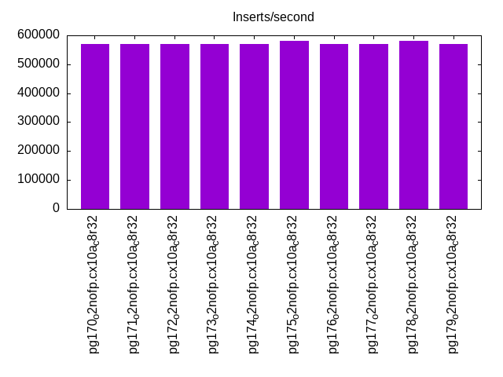
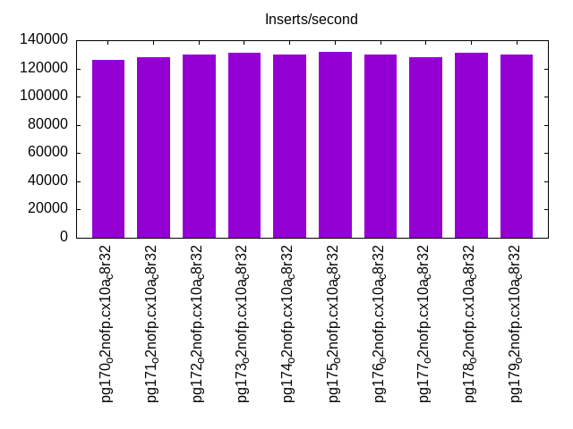
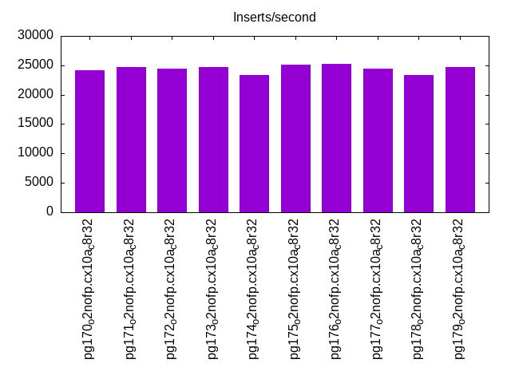
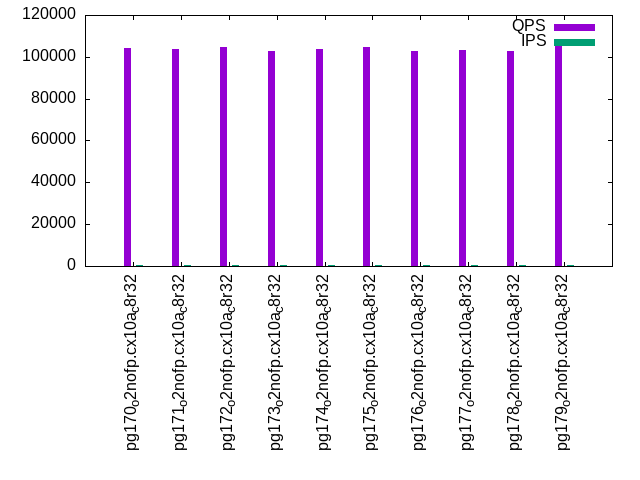
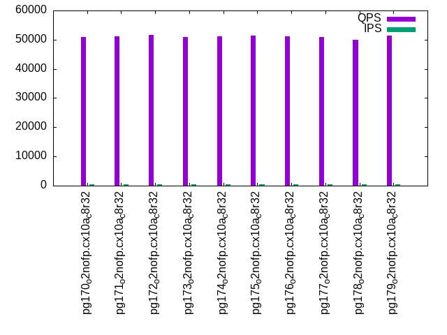
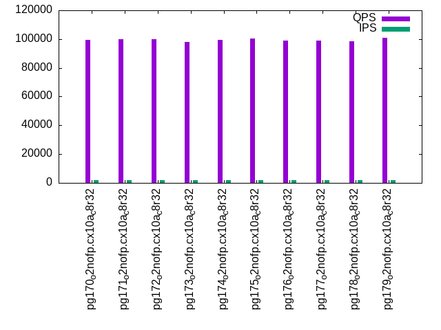
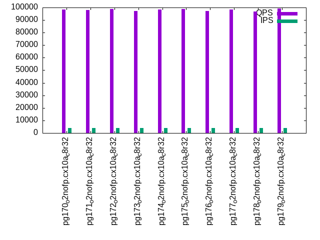
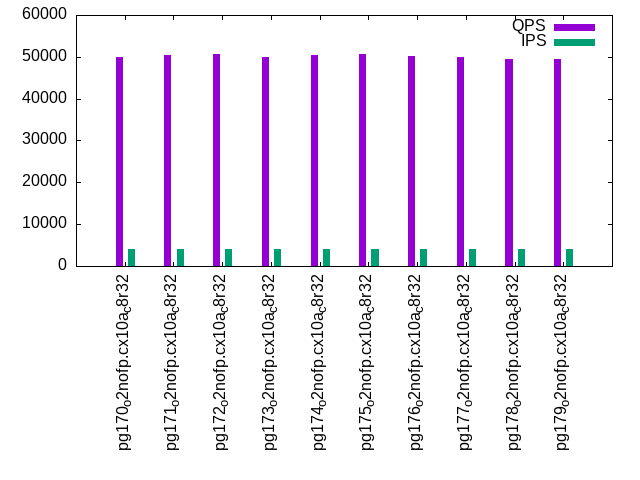

This is a report for the insert benchmark with 40M docs and 4 client(s). It is generated by scripts (bash, awk, sed) and Tufte might not be impressed. An overview of the insert benchmark is here and a short update is here. Below, by DBMS, I mean DBMS+version.config. An example is my8020.c10b40 where my means MySQL, 8020 is version 8.0.20 and c10b40 is the name for the configuration file.
The test server has 8 AMD cores, 32G RAM and an NVMe device for the database. The benchmark was run with 4 clients and there were 1 or 3 connections per client (1 for queries or inserts without rate limits, 1+1 for rate limited inserts+deletes). It uses 4 tables with a table per client. It loads 10M rows per table without secondary indexes, creates 3 secondary indexes per table, then inserts 16m+4m rows per table with a delete per insert to avoid growing the table. It then does 6 read+write tests for 1800s each that do queries as fast as possible with 100,100,500,500,1000,1000 inserts/s and the same for deletes/s per client concurrent with the queries. The database is cached by Postgres. Clients and the DBMS share one server.
The tested DBMS are:
The numbers are inserts/s for l.i0, l.i1 and l.i2, indexed docs (or rows) /s for l.x and queries/s for qr100, qp100 thru qr1000, qp1000" The values are the average rate over the entire test for inserts (IPS) and queries (QPS). The range of values for IPS and QPS is split into 3 parts: bottom 25%, middle 50%, top 25%. Values in the bottom 25% have a red background, values in the top 25% have a green background and values in the middle have no color. A gray background is used for values that can be ignored because the DBMS did not sustain the target insert rate. Red backgrounds are not used when the minimum value is within 80% of the max value.
| dbms | l.i0 | l.x | l.i1 | l.i2 | qr100 | qp100 | qr500 | qp500 | qr1000 | qp1000 |
|---|---|---|---|---|---|---|---|---|---|---|
| pg170_o2nofp.cx10a_c8r32 | 571428 | 1481485 | 126233 | 24206 | 104343 | 50804 | 99429 | 50415 | 98343 | 49959 |
| pg171_o2nofp.cx10a_c8r32 | 571428 | 1481485 | 128000 | 24691 | 103973 | 51155 | 100072 | 50904 | 98116 | 50354 |
| pg172_o2nofp.cx10a_c8r32 | 571428 | 1481485 | 129555 | 24427 | 104771 | 51539 | 99977 | 51063 | 98764 | 50638 |
| pg173_o2nofp.cx10a_c8r32 | 571428 | 1481485 | 131148 | 24691 | 102742 | 50833 | 98246 | 50559 | 97108 | 50001 |
| pg174_o2nofp.cx10a_c8r32 | 571428 | 1538465 | 130081 | 23324 | 103948 | 51156 | 99604 | 50458 | 98296 | 50417 |
| pg175_o2nofp.cx10a_c8r32 | 579710 | 1538465 | 131959 | 25118 | 104721 | 51303 | 100231 | 51153 | 98645 | 50572 |
| pg176_o2nofp.cx10a_c8r32 | 571428 | 1538465 | 129817 | 25276 | 102705 | 51094 | 98799 | 50820 | 97033 | 50227 |
| pg177_o2nofp.cx10a_c8r32 | 571428 | 1481485 | 127744 | 24502 | 103362 | 50814 | 99184 | 51179 | 98303 | 50037 |
| pg178_o2nofp.cx10a_c8r32 | 579710 | 1481485 | 130879 | 23324 | 102613 | 50002 | 98536 | 49942 | 96681 | 49367 |
| pg179_o2nofp.cx10a_c8r32 | 571428 | 1538465 | 129817 | 24730 | 105325 | 51365 | 100836 | 50993 | 99068 | 49554 |
This table has relative throughput, throughput for the DBMS relative to the DBMS in the first line, using the absolute throughput from the previous table. Values less than 0.95 have a yellow background. Values greater than 1.05 have a blue background.
| dbms | l.i0 | l.x | l.i1 | l.i2 | qr100 | qp100 | qr500 | qp500 | qr1000 | qp1000 |
|---|---|---|---|---|---|---|---|---|---|---|
| pg170_o2nofp.cx10a_c8r32 | 1.00 | 1.00 | 1.00 | 1.00 | 1.00 | 1.00 | 1.00 | 1.00 | 1.00 | 1.00 |
| pg171_o2nofp.cx10a_c8r32 | 1.00 | 1.00 | 1.01 | 1.02 | 1.00 | 1.01 | 1.01 | 1.01 | 1.00 | 1.01 |
| pg172_o2nofp.cx10a_c8r32 | 1.00 | 1.00 | 1.03 | 1.01 | 1.00 | 1.01 | 1.01 | 1.01 | 1.00 | 1.01 |
| pg173_o2nofp.cx10a_c8r32 | 1.00 | 1.00 | 1.04 | 1.02 | 0.98 | 1.00 | 0.99 | 1.00 | 0.99 | 1.00 |
| pg174_o2nofp.cx10a_c8r32 | 1.00 | 1.04 | 1.03 | 0.96 | 1.00 | 1.01 | 1.00 | 1.00 | 1.00 | 1.01 |
| pg175_o2nofp.cx10a_c8r32 | 1.01 | 1.04 | 1.05 | 1.04 | 1.00 | 1.01 | 1.01 | 1.01 | 1.00 | 1.01 |
| pg176_o2nofp.cx10a_c8r32 | 1.00 | 1.04 | 1.03 | 1.04 | 0.98 | 1.01 | 0.99 | 1.01 | 0.99 | 1.01 |
| pg177_o2nofp.cx10a_c8r32 | 1.00 | 1.00 | 1.01 | 1.01 | 0.99 | 1.00 | 1.00 | 1.02 | 1.00 | 1.00 |
| pg178_o2nofp.cx10a_c8r32 | 1.01 | 1.00 | 1.04 | 0.96 | 0.98 | 0.98 | 0.99 | 0.99 | 0.98 | 0.99 |
| pg179_o2nofp.cx10a_c8r32 | 1.00 | 1.04 | 1.03 | 1.02 | 1.01 | 1.01 | 1.01 | 1.01 | 1.01 | 0.99 |
This lists the average rate of inserts/s for the tests that do inserts concurrent with queries. For such tests the query rate is listed in the table above. The read+write tests are setup so that the insert rate should match the target rate every second. Cells that are not at least 95% of the target have a red background to indicate a failure to satisfy the target.
| dbms | qr100.L1 | qp100.L2 | qr500.L3 | qp500.L4 | qr1000.L5 | qp1000.L6 |
|---|---|---|---|---|---|---|
| pg170_o2nofp.cx10a_c8r32 | 399 | 399 | 1997 | 1996 | 3993 | 3993 |
| pg171_o2nofp.cx10a_c8r32 | 399 | 399 | 1997 | 1997 | 3993 | 3991 |
| pg172_o2nofp.cx10a_c8r32 | 399 | 399 | 1996 | 1997 | 3993 | 3993 |
| pg173_o2nofp.cx10a_c8r32 | 399 | 399 | 1997 | 1996 | 3993 | 3993 |
| pg174_o2nofp.cx10a_c8r32 | 399 | 399 | 1996 | 1997 | 3993 | 3991 |
| pg175_o2nofp.cx10a_c8r32 | 399 | 399 | 1997 | 1996 | 3993 | 3993 |
| pg176_o2nofp.cx10a_c8r32 | 399 | 399 | 1997 | 1997 | 3991 | 3993 |
| pg177_o2nofp.cx10a_c8r32 | 399 | 399 | 1997 | 1997 | 3991 | 3993 |
| pg178_o2nofp.cx10a_c8r32 | 399 | 399 | 1997 | 1996 | 3993 | 3993 |
| pg179_o2nofp.cx10a_c8r32 | 399 | 399 | 1996 | 1997 | 3993 | 3993 |
| target | 400 | 400 | 2000 | 2000 | 4000 | 4000 |
l.i0: load without secondary indexes. Graphs for performance per 1-second interval are here.
Average throughput:

Insert response time histogram: each cell has the percentage of responses that take <= the time in the header and max is the max response time in seconds. For the max column values in the top 25% of the range have a red background and in the bottom 25% of the range have a green background. The red background is not used when the min value is within 80% of the max value.
| dbms | 256us | 1ms | 4ms | 16ms | 64ms | 256ms | 1s | 4s | 16s | gt | max |
|---|---|---|---|---|---|---|---|---|---|---|---|
| pg170_o2nofp.cx10a_c8r32 | 97.493 | 2.502 | 0.005 | 0.006 | |||||||
| pg171_o2nofp.cx10a_c8r32 | 97.657 | 2.339 | 0.003 | 0.005 | |||||||
| pg172_o2nofp.cx10a_c8r32 | 97.725 | 2.272 | 0.003 | 0.005 | |||||||
| pg173_o2nofp.cx10a_c8r32 | 97.676 | 2.321 | 0.003 | 0.006 | |||||||
| pg174_o2nofp.cx10a_c8r32 | 97.663 | 2.334 | 0.003 | 0.005 | |||||||
| pg175_o2nofp.cx10a_c8r32 | 97.654 | 2.345 | 0.002 | 0.006 | |||||||
| pg176_o2nofp.cx10a_c8r32 | 97.630 | 2.365 | 0.005 | 0.014 | |||||||
| pg177_o2nofp.cx10a_c8r32 | 97.686 | 2.312 | 0.002 | 0.008 | |||||||
| pg178_o2nofp.cx10a_c8r32 | 97.740 | 2.259 | 0.002 | 0.005 | |||||||
| pg179_o2nofp.cx10a_c8r32 | 97.680 | 2.317 | 0.003 | 0.005 |
Performance metrics for the DBMS listed above. Some are normalized by throughput, others are not. Legend for results is here.
ips qps rps rmbps wps wmbps rpq rkbpq wpi wkbpi csps cpups cspq cpupq dbgb1 dbgb2 rss maxop p50 p99 tag 571428 0 1 0.0 2006.7 228.9 0.000 0.000 0.004 0.410 51947 59.5 0.091 8 3.8 10.4 0.3 0.006 169184 146885 pg170_o2nofp.cx10a_c8r32 571428 0 1 0.0 1996.3 227.9 0.000 0.000 0.003 0.408 51840 59.5 0.091 8 3.8 10.4 0.3 0.005 169584 153186 pg171_o2nofp.cx10a_c8r32 571428 0 1 0.0 2005.5 228.6 0.000 0.000 0.004 0.410 51607 59.1 0.090 8 3.8 10.4 0.3 0.005 170581 153675 pg172_o2nofp.cx10a_c8r32 571428 0 1 0.0 2001.9 228.4 0.000 0.000 0.004 0.409 51755 59.3 0.091 8 3.8 10.4 0.3 0.006 171182 152585 pg173_o2nofp.cx10a_c8r32 571428 0 1 0.0 2003.2 228.5 0.000 0.000 0.004 0.409 51667 59.2 0.090 8 3.8 10.4 0.3 0.005 170584 154084 pg174_o2nofp.cx10a_c8r32 579710 0 1 0.0 2070.8 236.3 0.000 0.000 0.004 0.417 52522 60.6 0.091 8 3.8 10.4 0.3 0.006 171284 156154 pg175_o2nofp.cx10a_c8r32 571428 0 1 0.0 2002.0 228.1 0.000 0.000 0.004 0.409 51739 59.3 0.091 8 3.8 10.4 0.3 0.014 170284 156585 pg176_o2nofp.cx10a_c8r32 571428 0 1 0.0 2005.6 228.5 0.000 0.000 0.004 0.409 51584 59.1 0.090 8 3.8 10.4 0.3 0.008 170883 152985 pg177_o2nofp.cx10a_c8r32 579710 0 1 0.0 2024.8 230.8 0.000 0.000 0.003 0.408 52314 60.4 0.090 8 3.8 10.4 0.3 0.005 171381 155262 pg178_o2nofp.cx10a_c8r32 571428 0 1 0.0 2008.5 228.9 0.000 0.000 0.004 0.410 51944 59.1 0.091 8 3.8 10.4 0.3 0.005 170780 153185 pg179_o2nofp.cx10a_c8r32
Average values from iostat.
r/s rkB/s rrqm/s %rrqm r_await rareq-s w/s wkB/s wrqm/s %wrqm w_await wareq-s d/s dkB/s drqm/s %drqm d_await dareq-s f/s f_await aqu-sz %util 1.154 4.615 0.000 0.000 0.128 4.000 2117.7 247553 145.7 6.852 0.461 116.2 0.323 10.89 0.000 0.000 0.531 12.97 107.9 1.602 1.243 30.88 pg170_o2nofp.cx10a_c8r32 1.046 4.185 0.000 0.000 0.138 3.692 2106.4 246392 147.0 6.965 0.488 116.3 0.338 5.477 0.000 0.000 0.351 4.879 107.4 1.776 1.329 32.47 pg171_o2nofp.cx10a_c8r32 0.908 3.631 0.000 0.000 0.102 3.692 2113.9 246932 147.1 6.886 0.495 116.2 0.400 5.600 0.000 0.000 0.622 9.230 108.2 1.628 1.321 30.12 pg172_o2nofp.cx10a_c8r32 0.800 3.200 0.000 0.000 0.142 3.385 2109.9 246642 146.3 6.854 0.473 116.3 0.277 5.538 0.000 0.000 0.324 4.352 107.7 1.690 1.318 31.14 pg173_o2nofp.cx10a_c8r32 0.708 2.831 0.000 0.000 0.158 3.692 2111.8 246810 147.0 6.898 0.489 116.2 0.415 12.25 0.000 0.000 0.540 9.558 108.0 1.654 1.349 30.44 pg174_o2nofp.cx10a_c8r32 1.200 4.800 0.000 0.000 0.102 4.000 2193.5 256458 152.9 6.968 0.477 116.3 0.567 5.733 0.000 0.000 0.662 4.744 111.1 1.624 1.355 31.29 pg175_o2nofp.cx10a_c8r32 1.154 4.615 0.000 0.000 0.101 4.000 2110.3 246351 147.2 6.952 0.434 116.1 0.262 2.708 0.000 0.000 0.561 4.121 109.0 1.492 1.121 28.36 pg176_o2nofp.cx10a_c8r32 1.000 4.000 0.000 0.000 0.098 4.000 2114.1 246765 146.4 6.857 0.429 116.2 0.415 4.369 0.000 0.000 0.448 4.615 109.0 1.539 1.100 29.08 pg177_o2nofp.cx10a_c8r32 1.000 4.000 0.000 0.000 0.175 4.000 2143.6 250337 153.2 7.108 0.462 116.1 0.417 6.000 0.000 0.000 0.373 5.448 111.2 1.595 1.306 30.76 pg178_o2nofp.cx10a_c8r32 1.000 4.000 0.000 0.000 0.113 3.692 2117.0 247264 146.5 6.860 0.496 116.1 0.538 9.600 0.000 0.000 0.632 6.015 109.5 1.294 1.314 26.59 pg179_o2nofp.cx10a_c8r32
l.x: create secondary indexes.
Average throughput:
Performance metrics for the DBMS listed above. Some are normalized by throughput, others are not. Legend for results is here.
ips qps rps rmbps wps wmbps rpq rkbpq wpi wkbpi csps cpups cspq cpupq dbgb1 dbgb2 rss maxop p50 p99 tag 1481485 0 3 0.0 3959.0 485.7 0.000 0.000 0.003 0.336 7689 32.5 0.005 2 7.7 17.7 0.0 0.002 NA NA pg170_o2nofp.cx10a_c8r32 1481485 0 2 0.0 3746.9 459.1 0.000 0.000 0.003 0.317 8116 32.7 0.005 2 7.7 17.7 0.0 0.002 NA NA pg171_o2nofp.cx10a_c8r32 1481485 0 3 0.0 4007.0 491.7 0.000 0.000 0.003 0.340 7850 32.8 0.005 2 7.7 17.7 0.0 0.002 NA NA pg172_o2nofp.cx10a_c8r32 1481485 0 2 0.0 4135.2 507.5 0.000 0.000 0.003 0.351 7848 32.8 0.005 2 7.7 17.7 0.0 0.002 NA NA pg173_o2nofp.cx10a_c8r32 1538465 0 3 0.0 3735.0 457.5 0.000 0.000 0.002 0.305 8073 33.0 0.005 2 7.7 17.7 0.0 0.002 NA NA pg174_o2nofp.cx10a_c8r32 1538465 0 3 0.0 4103.4 503.2 0.000 0.000 0.003 0.335 8524 33.2 0.006 2 7.7 17.7 1.9 0.002 NA NA pg175_o2nofp.cx10a_c8r32 1538465 0 2 0.0 3584.0 438.9 0.000 0.000 0.002 0.292 7866 32.3 0.005 2 7.7 17.7 0.0 0.002 NA NA pg176_o2nofp.cx10a_c8r32 1481485 0 2 0.0 3553.3 435.2 0.000 0.000 0.002 0.301 8030 33.7 0.005 2 7.7 17.7 0.0 0.002 NA NA pg177_o2nofp.cx10a_c8r32 1481485 0 2 0.0 3933.5 482.3 0.000 0.000 0.003 0.333 7637 32.8 0.005 2 7.7 17.7 0.0 0.002 NA NA pg178_o2nofp.cx10a_c8r32 1538465 0 2 0.0 4027.6 493.8 0.000 0.000 0.003 0.329 7877 33.7 0.005 2 7.7 17.7 3.1 0.002 NA NA pg179_o2nofp.cx10a_c8r32
Average values from iostat.
r/s rkB/s rrqm/s %rrqm r_await rareq-s w/s wkB/s wrqm/s %wrqm w_await wareq-s d/s dkB/s drqm/s %drqm d_await dareq-s f/s f_await aqu-sz %util 3.650 14.60 0.000 0.000 0.422 4.000 4945.8 621589 159.2 3.285 0.992 125.6 4.750 53697.8 0.000 0.000 1.952 7421.5 45.45 1.722 5.037 28.77 pg170_o2nofp.cx10a_c8r32 2.400 9.600 0.000 0.000 0.295 4.000 4134.9 520083 156.4 3.810 0.965 125.7 4.500 62232.6 0.000 0.000 1.308 10746.6 46.10 1.328 4.250 24.97 pg171_o2nofp.cx10a_c8r32 2.900 11.60 0.000 0.000 0.343 4.000 4482.0 564526 157.2 3.625 1.120 125.8 7.100 58755.0 0.000 0.000 2.087 4956.5 45.25 1.618 5.553 27.50 pg172_o2nofp.cx10a_c8r32 2.400 9.600 0.000 0.000 0.173 4.000 4635.3 583794 158.9 3.600 0.945 125.7 4.600 71446.2 0.000 0.000 1.307 8710.1 45.75 1.350 4.725 25.89 pg173_o2nofp.cx10a_c8r32 2.900 11.60 0.000 0.000 0.173 4.000 4138.4 520340 157.8 3.863 0.897 125.6 4.450 53613.0 0.000 0.000 1.235 7504.5 47.00 1.040 3.855 23.27 pg174_o2nofp.cx10a_c8r32 3.750 15.00 0.000 0.000 0.108 4.000 5120.4 643211 162.5 3.218 0.887 125.5 6.100 54668.6 0.000 0.000 1.515 5031.3 47.40 1.125 4.678 26.48 pg175_o2nofp.cx10a_c8r32 2.200 8.800 0.000 0.000 0.195 4.000 3938.2 495076 151.7 3.870 1.042 125.6 3.750 53415.8 0.000 0.000 1.892 8135.9 44.80 1.923 4.360 27.75 pg176_o2nofp.cx10a_c8r32 1.750 7.000 0.000 0.000 0.143 4.000 3909.8 491761 145.9 3.768 1.022 125.7 4.100 53209.4 0.000 0.000 1.755 7527.0 43.10 1.623 4.155 25.18 pg177_o2nofp.cx10a_c8r32 3.050 12.20 0.000 0.000 0.195 4.000 4913.9 617377 152.8 3.163 0.960 125.5 4.700 54278.8 0.000 0.000 1.450 6416.5 44.20 1.735 4.888 28.96 pg178_o2nofp.cx10a_c8r32 2.850 11.40 0.000 0.000 0.265 4.000 5024.1 631250 155.2 3.115 1.067 125.6 4.950 62685.0 0.000 0.000 2.442 9978.5 45.20 1.600 5.695 28.13 pg179_o2nofp.cx10a_c8r32
l.i1: continue load after secondary indexes created with 50 inserts per transaction. Graphs for performance per 1-second interval are here.
Average throughput:

Insert response time histogram: each cell has the percentage of responses that take <= the time in the header and max is the max response time in seconds. For the max column values in the top 25% of the range have a red background and in the bottom 25% of the range have a green background. The red background is not used when the min value is within 80% of the max value.
| dbms | 256us | 1ms | 4ms | 16ms | 64ms | 256ms | 1s | 4s | 16s | gt | max |
|---|---|---|---|---|---|---|---|---|---|---|---|
| pg170_o2nofp.cx10a_c8r32 | 66.778 | 33.071 | 0.105 | 0.046 | nonzero | 0.070 | |||||
| pg171_o2nofp.cx10a_c8r32 | 68.975 | 30.901 | 0.081 | 0.043 | 0.054 | ||||||
| pg172_o2nofp.cx10a_c8r32 | 69.156 | 30.728 | 0.077 | 0.038 | nonzero | 0.082 | |||||
| pg173_o2nofp.cx10a_c8r32 | 67.605 | 32.256 | 0.093 | 0.046 | 0.050 | ||||||
| pg174_o2nofp.cx10a_c8r32 | 67.848 | 32.039 | 0.069 | 0.045 | 0.052 | ||||||
| pg175_o2nofp.cx10a_c8r32 | 68.114 | 31.767 | 0.079 | 0.040 | 0.044 | ||||||
| pg176_o2nofp.cx10a_c8r32 | 67.225 | 32.655 | 0.078 | 0.042 | 0.054 | ||||||
| pg177_o2nofp.cx10a_c8r32 | 65.509 | 34.351 | 0.097 | 0.042 | nonzero | 0.078 | |||||
| pg178_o2nofp.cx10a_c8r32 | 69.217 | 30.668 | 0.068 | 0.047 | nonzero | 0.075 | |||||
| pg179_o2nofp.cx10a_c8r32 | 70.562 | 29.305 | 0.089 | 0.043 | nonzero | 0.092 |
Delete response time histogram: each cell has the percentage of responses that take <= the time in the header and max is the max response time in seconds. For the max column values in the top 25% of the range have a red background and in the bottom 25% of the range have a green background. The red background is not used when the min value is within 80% of the max value.
| dbms | 256us | 1ms | 4ms | 16ms | 64ms | 256ms | 1s | 4s | 16s | gt | max |
|---|---|---|---|---|---|---|---|---|---|---|---|
| pg170_o2nofp.cx10a_c8r32 | 0.012 | 37.205 | 62.571 | 0.167 | 0.046 | nonzero | 0.069 | ||||
| pg171_o2nofp.cx10a_c8r32 | 0.014 | 42.562 | 57.029 | 0.349 | 0.046 | 0.054 | |||||
| pg172_o2nofp.cx10a_c8r32 | 0.014 | 39.477 | 60.311 | 0.161 | 0.038 | nonzero | 0.082 | ||||
| pg173_o2nofp.cx10a_c8r32 | 0.017 | 37.717 | 62.081 | 0.129 | 0.056 | nonzero | 0.090 | ||||
| pg174_o2nofp.cx10a_c8r32 | 0.013 | 37.551 | 62.258 | 0.131 | 0.047 | nonzero | 0.084 | ||||
| pg175_o2nofp.cx10a_c8r32 | 0.006 | 38.384 | 61.449 | 0.118 | 0.042 | 0.044 | |||||
| pg176_o2nofp.cx10a_c8r32 | 0.014 | 37.002 | 62.815 | 0.128 | 0.040 | 0.053 | |||||
| pg177_o2nofp.cx10a_c8r32 | 0.012 | 39.091 | 60.673 | 0.180 | 0.044 | 0.054 | |||||
| pg178_o2nofp.cx10a_c8r32 | 0.012 | 40.314 | 59.501 | 0.127 | 0.046 | nonzero | 0.071 | ||||
| pg179_o2nofp.cx10a_c8r32 | 0.012 | 39.235 | 60.568 | 0.141 | 0.045 | nonzero | 0.075 |
Performance metrics for the DBMS listed above. Some are normalized by throughput, others are not. Legend for results is here.
ips qps rps rmbps wps wmbps rpq rkbpq wpi wkbpi csps cpups cspq cpupq dbgb1 dbgb2 rss maxop p50 p99 tag 126233 0 1 0.0 1599.3 179.3 0.000 0.000 0.013 1.454 36575 80.8 0.290 51 10.8 50.9 9.8 0.070 29847 14549 pg170_o2nofp.cx10a_c8r32 128000 0 0 0.0 1625.8 182.5 0.000 0.000 0.013 1.460 37243 81.3 0.291 51 10.8 50.8 7.0 0.054 30196 8249 pg171_o2nofp.cx10a_c8r32 129555 0 0 0.0 1652.4 185.1 0.000 0.000 0.013 1.463 37455 82.4 0.289 51 10.8 50.9 9.8 0.082 30133 14199 pg172_o2nofp.cx10a_c8r32 131148 0 0 0.0 1676.7 188.0 0.000 0.000 0.013 1.468 37307 82.2 0.284 50 10.8 50.9 8.6 0.050 30247 19295 pg173_o2nofp.cx10a_c8r32 130081 0 1 0.0 1669.7 187.1 0.000 0.000 0.013 1.473 37193 82.3 0.286 51 10.8 50.8 9.1 0.052 29447 17897 pg174_o2nofp.cx10a_c8r32 131959 0 1 0.0 1685.1 189.0 0.000 0.000 0.013 1.467 37559 83.7 0.285 51 10.8 50.9 2.0 0.044 30147 14148 pg175_o2nofp.cx10a_c8r32 129817 0 1 0.0 1663.4 186.5 0.000 0.000 0.013 1.471 37165 82.6 0.286 51 10.9 50.9 10.2 0.054 29497 14799 pg176_o2nofp.cx10a_c8r32 127744 0 0 0.0 1627.9 182.5 0.000 0.000 0.013 1.463 37132 81.7 0.291 51 10.8 50.8 7.4 0.078 30897 14049 pg177_o2nofp.cx10a_c8r32 130879 0 0 0.0 1672.7 187.2 0.000 0.000 0.013 1.465 37708 82.7 0.288 51 10.8 50.8 9.1 0.075 29497 14099 pg178_o2nofp.cx10a_c8r32 129817 0 0 0.0 1653.3 185.1 0.000 0.000 0.013 1.460 37275 82.1 0.287 51 10.8 50.8 2.0 0.092 29447 18548 pg179_o2nofp.cx10a_c8r32
Average values from iostat.
r/s rkB/s rrqm/s %rrqm r_await rareq-s w/s wkB/s wrqm/s %wrqm w_await wareq-s d/s dkB/s drqm/s %drqm d_await dareq-s f/s f_await aqu-sz %util 0.556 2.224 0.000 0.000 0.173 3.080 1604.9 184202 98.37 6.019 0.415 113.4 0.088 165.0 0.000 0.000 0.077 300.8 92.69 1.747 0.827 27.08 pg170_o2nofp.cx10a_c8r32 0.491 1.964 0.000 0.000 0.146 2.990 1622.8 186451 102.1 5.816 0.396 113.7 0.083 162.7 0.000 0.000 0.107 249.3 94.64 1.692 0.821 26.50 pg171_o2nofp.cx10a_c8r32 0.518 2.070 0.000 0.000 0.175 3.010 1658.5 190195 102.2 6.016 0.386 113.5 0.109 261.0 0.000 0.000 0.172 275.8 96.36 1.641 0.799 26.32 pg172_o2nofp.cx10a_c8r32 0.329 1.317 0.000 0.000 0.113 2.417 1683.1 193291 105.2 5.981 0.386 113.6 0.104 338.8 0.000 0.000 0.088 185.3 96.81 1.597 0.820 26.21 pg173_o2nofp.cx10a_c8r32 0.585 2.342 0.000 0.000 0.119 3.093 1666.8 191161 101.3 6.013 0.396 113.4 0.109 307.3 0.000 0.000 0.123 359.8 96.96 1.604 0.806 26.44 pg174_o2nofp.cx10a_c8r32 0.564 2.257 0.000 0.000 0.142 3.116 1691.7 194302 102.2 5.856 0.403 113.7 0.097 230.0 0.000 0.000 0.107 342.5 98.89 1.593 0.846 27.27 pg175_o2nofp.cx10a_c8r32 0.563 2.251 0.000 0.000 0.119 3.175 1660.4 190485 101.9 6.037 0.384 113.4 0.076 177.7 0.000 0.000 0.094 350.1 96.41 1.579 0.795 25.88 pg176_o2nofp.cx10a_c8r32 0.416 1.664 0.000 0.000 0.139 2.788 1624.3 186331 97.30 5.919 0.392 113.3 0.099 216.3 0.000 0.000 0.101 231.2 94.50 1.572 0.797 25.50 pg177_o2nofp.cx10a_c8r32 0.485 1.941 0.000 0.000 0.167 3.083 1679.1 192454 103.2 6.031 0.429 113.4 0.115 211.8 0.000 0.000 0.223 110.9 97.55 1.782 0.894 28.69 pg178_o2nofp.cx10a_c8r32 0.460 1.839 0.000 0.000 0.099 3.052 1659.5 190255 100.6 5.915 0.377 113.4 0.105 210.9 0.000 0.000 0.079 205.3 96.56 1.478 0.780 25.23 pg179_o2nofp.cx10a_c8r32
l.i2: continue load after secondary indexes created with 5 inserts per transaction. Graphs for performance per 1-second interval are here.
Average throughput:

Insert response time histogram: each cell has the percentage of responses that take <= the time in the header and max is the max response time in seconds. For the max column values in the top 25% of the range have a red background and in the bottom 25% of the range have a green background. The red background is not used when the min value is within 80% of the max value.
| dbms | 256us | 1ms | 4ms | 16ms | 64ms | 256ms | 1s | 4s | 16s | gt | max |
|---|---|---|---|---|---|---|---|---|---|---|---|
| pg170_o2nofp.cx10a_c8r32 | 97.207 | 2.773 | 0.020 | 0.004 | |||||||
| pg171_o2nofp.cx10a_c8r32 | 97.762 | 2.222 | 0.016 | 0.004 | |||||||
| pg172_o2nofp.cx10a_c8r32 | 97.757 | 2.226 | 0.017 | nonzero | 0.004 | ||||||
| pg173_o2nofp.cx10a_c8r32 | 97.202 | 2.781 | 0.017 | nonzero | 0.005 | ||||||
| pg174_o2nofp.cx10a_c8r32 | 96.921 | 3.058 | 0.021 | 0.004 | |||||||
| pg175_o2nofp.cx10a_c8r32 | 96.846 | 3.132 | 0.022 | nonzero | 0.004 | ||||||
| pg176_o2nofp.cx10a_c8r32 | 97.712 | 2.272 | 0.015 | nonzero | 0.004 | ||||||
| pg177_o2nofp.cx10a_c8r32 | 97.064 | 2.917 | 0.020 | 0.004 | |||||||
| pg178_o2nofp.cx10a_c8r32 | 96.620 | 3.358 | 0.022 | nonzero | nonzero | 0.017 | |||||
| pg179_o2nofp.cx10a_c8r32 | 96.862 | 3.118 | 0.020 | nonzero | 0.015 |
Delete response time histogram: each cell has the percentage of responses that take <= the time in the header and max is the max response time in seconds. For the max column values in the top 25% of the range have a red background and in the bottom 25% of the range have a green background. The red background is not used when the min value is within 80% of the max value.
| dbms | 256us | 1ms | 4ms | 16ms | 64ms | 256ms | 1s | 4s | 16s | gt | max |
|---|---|---|---|---|---|---|---|---|---|---|---|
| pg170_o2nofp.cx10a_c8r32 | 7.462 | 59.838 | 32.700 | 0.001 | 0.007 | ||||||
| pg171_o2nofp.cx10a_c8r32 | 8.577 | 61.670 | 29.752 | 0.001 | 0.006 | ||||||
| pg172_o2nofp.cx10a_c8r32 | 8.040 | 60.542 | 31.417 | nonzero | 0.005 | ||||||
| pg173_o2nofp.cx10a_c8r32 | 7.300 | 64.466 | 28.233 | 0.001 | 0.006 | ||||||
| pg174_o2nofp.cx10a_c8r32 | 7.415 | 53.499 | 39.086 | 0.001 | 0.007 | ||||||
| pg175_o2nofp.cx10a_c8r32 | 5.379 | 66.597 | 28.024 | nonzero | 0.005 | ||||||
| pg176_o2nofp.cx10a_c8r32 | 7.760 | 67.079 | 25.160 | nonzero | 0.007 | ||||||
| pg177_o2nofp.cx10a_c8r32 | 6.859 | 63.647 | 29.494 | 0.001 | 0.005 | ||||||
| pg178_o2nofp.cx10a_c8r32 | 6.927 | 62.037 | 31.035 | 0.001 | nonzero | 0.018 | |||||
| pg179_o2nofp.cx10a_c8r32 | 6.708 | 64.020 | 29.272 | 0.001 | 0.016 |
Performance metrics for the DBMS listed above. Some are normalized by throughput, others are not. Legend for results is here.
ips qps rps rmbps wps wmbps rpq rkbpq wpi wkbpi csps cpups cspq cpupq dbgb1 dbgb2 rss maxop p50 p99 tag 24206 0 0 0.0 209.4 22.6 0.000 0.000 0.009 0.955 85222 64.3 3.521 213 10.9 51.0 7.6 0.004 4420 3159 pg170_o2nofp.cx10a_c8r32 24691 0 0 0.0 220.2 23.2 0.000 0.000 0.009 0.961 87624 64.4 3.549 209 10.9 50.9 0.2 0.004 4999 3120 pg171_o2nofp.cx10a_c8r32 24427 0 0 0.0 216.7 22.7 0.000 0.000 0.009 0.951 86643 63.9 3.547 209 10.9 51.0 1.5 0.004 5369 3396 pg172_o2nofp.cx10a_c8r32 24691 0 0 0.0 220.9 23.1 0.000 0.000 0.009 0.959 87248 64.5 3.534 209 10.9 50.9 3.4 0.005 4955 3175 pg173_o2nofp.cx10a_c8r32 23324 0 0 0.0 207.2 21.7 0.000 0.000 0.009 0.951 82866 64.0 3.553 220 10.9 50.9 7.3 0.004 4215 2935 pg174_o2nofp.cx10a_c8r32 25118 0 0 0.0 224.5 23.5 0.000 0.000 0.009 0.957 87456 64.7 3.482 206 10.9 51.0 7.8 0.004 5424 3205 pg175_o2nofp.cx10a_c8r32 25276 0 0 0.0 225.1 23.6 0.000 0.000 0.009 0.957 89309 65.2 3.533 206 11.0 51.0 0.8 0.004 5474 3220 pg176_o2nofp.cx10a_c8r32 24502 0 0 0.0 215.8 23.1 0.000 0.000 0.009 0.964 86286 64.9 3.522 212 10.9 50.9 0.4 0.004 5259 3280 pg177_o2nofp.cx10a_c8r32 23324 0 0 0.0 208.1 21.7 0.000 0.000 0.009 0.955 82204 63.0 3.525 216 10.9 50.9 9.8 0.017 4929 2945 pg178_o2nofp.cx10a_c8r32 24730 0 0 0.0 218.1 23.0 0.000 0.000 0.009 0.954 86617 64.6 3.503 209 10.9 51.0 8.4 0.015 5339 3230 pg179_o2nofp.cx10a_c8r32
Average values from iostat.
r/s rkB/s rrqm/s %rrqm r_await rareq-s w/s wkB/s wrqm/s %wrqm w_await wareq-s d/s dkB/s drqm/s %drqm d_await dareq-s f/s f_await aqu-sz %util 0.003 0.012 0.000 0.000 0.015 0.061 209.0 23073.8 3.605 1.868 0.216 110.3 0.005 0.525 0.000 0.000 0.004 1.908 16.56 1.606 0.071 3.322 pg170_o2nofp.cx10a_c8r32 0.000 0.000 0.000 0.000 0.000 0.000 220.4 23733.6 10.55 2.478 0.223 109.7 0.000 0.000 0.000 0.000 0.000 0.000 20.81 1.503 0.083 4.226 pg171_o2nofp.cx10a_c8r32 0.000 0.000 0.000 0.000 0.000 0.000 216.5 23192.4 12.14 2.494 0.235 109.2 0.109 27.57 0.000 0.000 0.002 1.941 21.19 1.526 0.090 4.717 pg172_o2nofp.cx10a_c8r32 0.000 0.000 0.000 0.000 0.000 0.000 220.3 23598.0 13.20 2.868 0.251 109.2 0.111 28.00 0.000 0.000 0.003 1.972 21.87 1.566 0.096 4.875 pg173_o2nofp.cx10a_c8r32 0.001 0.006 0.000 0.000 0.000 0.029 207.8 22238.1 12.75 3.157 0.278 108.8 0.099 25.22 0.000 0.000 0.007 1.882 20.64 1.595 0.102 5.130 pg174_o2nofp.cx10a_c8r32 0.002 0.006 0.000 0.000 0.000 0.032 222.6 23805.1 12.80 3.063 0.277 108.6 0.110 28.04 0.000 0.000 0.006 2.032 21.89 1.623 0.101 5.201 pg175_o2nofp.cx10a_c8r32 0.002 0.006 0.000 0.000 0.000 0.032 225.1 24185.3 13.08 3.164 0.265 109.1 0.110 27.85 0.000 0.000 0.005 2.018 21.97 1.552 0.102 5.273 pg176_o2nofp.cx10a_c8r32 0.000 0.000 0.000 0.000 0.000 0.000 215.9 23624.0 6.228 2.082 0.222 110.2 0.000 0.000 0.000 0.000 0.000 0.000 18.27 1.568 0.080 3.909 pg177_o2nofp.cx10a_c8r32 0.001 0.006 0.000 0.000 0.000 0.029 207.3 22159.6 12.31 3.060 0.289 108.6 0.106 29.29 0.000 0.000 0.027 18.44 20.55 1.714 0.102 5.280 pg178_o2nofp.cx10a_c8r32 0.002 0.006 0.000 0.000 0.000 0.031 216.6 23413.0 9.188 2.468 0.226 109.1 0.002 1.800 0.000 0.000 0.008 9.000 19.89 1.379 0.082 4.213 pg179_o2nofp.cx10a_c8r32
qr100.L1: range queries with 100 insert/s per client. Graphs for performance per 1-second interval are here.
Average throughput:

Query response time histogram: each cell has the percentage of responses that take <= the time in the header and max is the max response time in seconds. For max values in the top 25% of the range have a red background and in the bottom 25% of the range have a green background. The red background is not used when the min value is within 80% of the max value.
| dbms | 256us | 1ms | 4ms | 16ms | 64ms | 256ms | 1s | 4s | 16s | gt | max |
|---|---|---|---|---|---|---|---|---|---|---|---|
| pg170_o2nofp.cx10a_c8r32 | 99.993 | 0.007 | nonzero | 0.001 | |||||||
| pg171_o2nofp.cx10a_c8r32 | 99.994 | 0.006 | 0.001 | ||||||||
| pg172_o2nofp.cx10a_c8r32 | 99.994 | 0.006 | nonzero | 0.001 | |||||||
| pg173_o2nofp.cx10a_c8r32 | 99.994 | 0.006 | 0.001 | ||||||||
| pg174_o2nofp.cx10a_c8r32 | 99.993 | 0.007 | nonzero | 0.003 | |||||||
| pg175_o2nofp.cx10a_c8r32 | 99.992 | 0.008 | nonzero | 0.001 | |||||||
| pg176_o2nofp.cx10a_c8r32 | 99.993 | 0.007 | 0.001 | ||||||||
| pg177_o2nofp.cx10a_c8r32 | 99.993 | 0.007 | nonzero | 0.001 | |||||||
| pg178_o2nofp.cx10a_c8r32 | 99.993 | 0.007 | nonzero | 0.001 | |||||||
| pg179_o2nofp.cx10a_c8r32 | 99.993 | 0.007 | nonzero | 0.001 |
Insert response time histogram: each cell has the percentage of responses that take <= the time in the header and max is the max response time in seconds. For max values in the top 25% of the range have a red background and in the bottom 25% of the range have a green background. The red background is not used when the min value is within 80% of the max value.
| dbms | 256us | 1ms | 4ms | 16ms | 64ms | 256ms | 1s | 4s | 16s | gt | max |
|---|---|---|---|---|---|---|---|---|---|---|---|
| pg170_o2nofp.cx10a_c8r32 | 71.979 | 27.979 | 0.042 | 0.008 | |||||||
| pg171_o2nofp.cx10a_c8r32 | 71.201 | 28.757 | 0.042 | 0.007 | |||||||
| pg172_o2nofp.cx10a_c8r32 | 71.556 | 28.396 | 0.049 | 0.005 | |||||||
| pg173_o2nofp.cx10a_c8r32 | 70.083 | 29.889 | 0.028 | 0.004 | |||||||
| pg174_o2nofp.cx10a_c8r32 | 71.500 | 28.451 | 0.049 | 0.005 | |||||||
| pg175_o2nofp.cx10a_c8r32 | 70.285 | 29.688 | 0.028 | 0.005 | |||||||
| pg176_o2nofp.cx10a_c8r32 | 69.361 | 30.611 | 0.028 | 0.005 | |||||||
| pg177_o2nofp.cx10a_c8r32 | 66.604 | 33.340 | 0.056 | 0.008 | |||||||
| pg178_o2nofp.cx10a_c8r32 | 73.278 | 26.681 | 0.042 | 0.005 | |||||||
| pg179_o2nofp.cx10a_c8r32 | 73.757 | 26.208 | 0.035 | 0.005 |
Delete response time histogram: each cell has the percentage of responses that take <= the time in the header and max is the max response time in seconds. For max values in the top 25% of the range have a red background and in the bottom 25% of the range have a green background. The red background is not used when the min value is within 80% of the max value.
| dbms | 256us | 1ms | 4ms | 16ms | 64ms | 256ms | 1s | 4s | 16s | gt | max |
|---|---|---|---|---|---|---|---|---|---|---|---|
| pg170_o2nofp.cx10a_c8r32 | 0.014 | 97.799 | 2.188 | 0.002 | |||||||
| pg171_o2nofp.cx10a_c8r32 | 0.021 | 97.896 | 2.083 | 0.002 | |||||||
| pg172_o2nofp.cx10a_c8r32 | 98.306 | 1.694 | 0.002 | ||||||||
| pg173_o2nofp.cx10a_c8r32 | 0.007 | 97.681 | 2.312 | 0.003 | |||||||
| pg174_o2nofp.cx10a_c8r32 | 0.014 | 97.826 | 2.160 | 0.002 | |||||||
| pg175_o2nofp.cx10a_c8r32 | 97.451 | 2.549 | 0.002 | ||||||||
| pg176_o2nofp.cx10a_c8r32 | 97.208 | 2.792 | 0.004 | ||||||||
| pg177_o2nofp.cx10a_c8r32 | 97.292 | 2.708 | 0.002 | ||||||||
| pg178_o2nofp.cx10a_c8r32 | 0.021 | 98.111 | 1.868 | 0.003 | |||||||
| pg179_o2nofp.cx10a_c8r32 | 0.028 | 98.007 | 1.965 | 0.002 |
Performance metrics for the DBMS listed above. Some are normalized by throughput, others are not. Legend for results is here.
ips qps rps rmbps wps wmbps rpq rkbpq wpi wkbpi csps cpups cspq cpupq dbgb1 dbgb2 rss maxop p50 p99 tag 399 104343 0 0.0 21.3 1.7 0.000 0.000 0.053 4.330 397947 42.0 3.814 32 10.9 51.0 0.2 0.001 26173 25581 pg170_o2nofp.cx10a_c8r32 399 103973 0 0.0 21.6 1.7 0.000 0.000 0.054 4.418 396761 41.2 3.816 32 10.9 50.9 0.2 0.001 26046 25485 pg171_o2nofp.cx10a_c8r32 399 104771 0 0.0 21.5 1.7 0.000 0.000 0.054 4.415 399597 41.1 3.814 31 10.9 51.0 0.2 0.001 26173 25645 pg172_o2nofp.cx10a_c8r32 399 102742 0 0.0 21.7 1.7 0.000 0.000 0.054 4.424 392084 41.0 3.816 32 10.9 51.0 0.2 0.001 25693 25181 pg173_o2nofp.cx10a_c8r32 399 103948 0 0.0 21.6 1.7 0.000 0.000 0.054 4.419 396445 41.6 3.814 32 10.9 50.9 0.2 0.003 25917 25437 pg174_o2nofp.cx10a_c8r32 399 104721 0 0.0 21.7 1.7 0.000 0.000 0.054 4.423 399589 40.7 3.816 31 10.9 51.0 0.2 0.001 26222 25565 pg175_o2nofp.cx10a_c8r32 399 102705 0 0.0 21.7 1.7 0.000 0.000 0.054 4.426 391727 41.2 3.814 32 11.0 51.0 0.2 0.001 25741 25133 pg176_o2nofp.cx10a_c8r32 399 103362 0 0.0 21.6 1.7 0.000 0.000 0.054 4.415 394207 41.3 3.814 32 10.9 50.9 0.2 0.001 25965 25437 pg177_o2nofp.cx10a_c8r32 399 102613 0 0.0 21.7 1.7 0.000 0.000 0.054 4.415 391386 41.0 3.814 32 10.9 51.0 0.2 0.001 25741 25101 pg178_o2nofp.cx10a_c8r32 399 105325 0 0.0 21.8 1.7 0.000 0.000 0.055 4.420 401706 40.9 3.814 31 10.9 51.0 0.2 0.001 26301 25741 pg179_o2nofp.cx10a_c8r32
Average values from iostat.
r/s rkB/s rrqm/s %rrqm r_await rareq-s w/s wkB/s wrqm/s %wrqm w_await wareq-s d/s dkB/s drqm/s %drqm d_await dareq-s f/s f_await aqu-sz %util 0.000 0.000 0.000 0.000 0.000 0.000 21.26 1723.3 0.374 1.955 1.768 73.66 0.001 0.002 0.000 0.000 0.003 0.011 4.181 2.334 0.041 1.780 pg170_o2nofp.cx10a_c8r32 0.000 0.000 0.000 0.000 0.000 0.000 21.58 1757.9 0.442 2.235 1.692 74.15 0.001 0.002 0.000 0.000 0.003 0.011 4.134 2.147 0.039 1.789 pg171_o2nofp.cx10a_c8r32 0.000 0.000 0.000 0.000 0.000 0.000 21.50 1757.6 0.393 1.979 1.745 74.45 0.001 0.002 0.000 0.000 0.003 0.011 4.147 2.201 0.039 1.841 pg172_o2nofp.cx10a_c8r32 0.000 0.000 0.000 0.000 0.000 0.000 21.66 1760.3 0.411 2.153 1.766 74.17 0.001 0.002 0.000 0.000 0.003 0.011 4.199 2.245 0.041 1.720 pg173_o2nofp.cx10a_c8r32 0.000 0.000 0.000 0.000 0.000 0.000 21.58 1759.2 0.433 2.312 1.733 74.23 0.001 0.002 0.000 0.000 0.000 0.011 4.143 2.187 0.040 1.811 pg174_o2nofp.cx10a_c8r32 0.000 0.000 0.000 0.000 0.000 0.000 21.64 1760.1 0.391 1.993 1.745 74.27 0.001 0.002 0.000 0.000 0.003 0.011 4.171 2.187 0.040 1.646 pg175_o2nofp.cx10a_c8r32 0.000 0.000 0.000 0.000 0.000 0.000 21.61 1761.7 0.416 2.151 1.730 74.30 0.001 0.002 0.000 0.000 0.003 0.011 4.155 2.192 0.040 1.661 pg176_o2nofp.cx10a_c8r32 0.000 0.000 0.000 0.000 0.000 0.000 21.59 1757.5 0.374 1.893 1.727 74.13 0.001 0.002 0.000 0.000 0.003 0.011 4.171 2.207 0.039 1.690 pg177_o2nofp.cx10a_c8r32 0.000 0.000 0.000 0.000 0.000 0.000 21.61 1757.5 0.383 1.904 1.754 74.06 0.001 0.002 0.000 0.000 0.000 0.011 4.189 2.304 0.041 1.778 pg178_o2nofp.cx10a_c8r32 0.000 0.000 0.000 0.000 0.000 0.000 21.79 1759.4 0.385 1.969 1.636 73.59 0.001 0.002 0.000 0.000 0.003 0.011 4.283 1.826 0.037 1.580 pg179_o2nofp.cx10a_c8r32
qp100.L2: point queries with 100 insert/s per client. Graphs for performance per 1-second interval are here.
Average throughput:

Query response time histogram: each cell has the percentage of responses that take <= the time in the header and max is the max response time in seconds. For max values in the top 25% of the range have a red background and in the bottom 25% of the range have a green background. The red background is not used when the min value is within 80% of the max value.
| dbms | 256us | 1ms | 4ms | 16ms | 64ms | 256ms | 1s | 4s | 16s | gt | max |
|---|---|---|---|---|---|---|---|---|---|---|---|
| pg170_o2nofp.cx10a_c8r32 | 99.963 | 0.037 | nonzero | 0.003 | |||||||
| pg171_o2nofp.cx10a_c8r32 | 99.962 | 0.038 | nonzero | 0.001 | |||||||
| pg172_o2nofp.cx10a_c8r32 | 99.960 | 0.040 | nonzero | 0.002 | |||||||
| pg173_o2nofp.cx10a_c8r32 | 99.961 | 0.039 | 0.001 | ||||||||
| pg174_o2nofp.cx10a_c8r32 | 99.957 | 0.043 | nonzero | 0.002 | |||||||
| pg175_o2nofp.cx10a_c8r32 | 99.956 | 0.044 | nonzero | 0.001 | |||||||
| pg176_o2nofp.cx10a_c8r32 | 99.956 | 0.044 | nonzero | 0.002 | |||||||
| pg177_o2nofp.cx10a_c8r32 | 99.961 | 0.039 | nonzero | 0.001 | |||||||
| pg178_o2nofp.cx10a_c8r32 | 99.958 | 0.041 | nonzero | 0.001 | |||||||
| pg179_o2nofp.cx10a_c8r32 | 99.961 | 0.039 | nonzero | 0.001 |
Insert response time histogram: each cell has the percentage of responses that take <= the time in the header and max is the max response time in seconds. For max values in the top 25% of the range have a red background and in the bottom 25% of the range have a green background. The red background is not used when the min value is within 80% of the max value.
| dbms | 256us | 1ms | 4ms | 16ms | 64ms | 256ms | 1s | 4s | 16s | gt | max |
|---|---|---|---|---|---|---|---|---|---|---|---|
| pg170_o2nofp.cx10a_c8r32 | 48.417 | 51.556 | 0.028 | 0.004 | |||||||
| pg171_o2nofp.cx10a_c8r32 | 56.090 | 43.889 | 0.021 | 0.005 | |||||||
| pg172_o2nofp.cx10a_c8r32 | 46.583 | 53.389 | 0.028 | 0.005 | |||||||
| pg173_o2nofp.cx10a_c8r32 | 58.653 | 41.319 | 0.028 | 0.005 | |||||||
| pg174_o2nofp.cx10a_c8r32 | 56.201 | 43.764 | 0.035 | 0.004 | |||||||
| pg175_o2nofp.cx10a_c8r32 | 56.896 | 43.076 | 0.028 | 0.005 | |||||||
| pg176_o2nofp.cx10a_c8r32 | 58.722 | 41.243 | 0.035 | 0.005 | |||||||
| pg177_o2nofp.cx10a_c8r32 | 55.354 | 44.611 | 0.035 | 0.005 | |||||||
| pg178_o2nofp.cx10a_c8r32 | 58.764 | 41.201 | 0.035 | 0.005 | |||||||
| pg179_o2nofp.cx10a_c8r32 | 60.153 | 39.806 | 0.042 | 0.005 |
Delete response time histogram: each cell has the percentage of responses that take <= the time in the header and max is the max response time in seconds. For max values in the top 25% of the range have a red background and in the bottom 25% of the range have a green background. The red background is not used when the min value is within 80% of the max value.
| dbms | 256us | 1ms | 4ms | 16ms | 64ms | 256ms | 1s | 4s | 16s | gt | max |
|---|---|---|---|---|---|---|---|---|---|---|---|
| pg170_o2nofp.cx10a_c8r32 | 12.819 | 87.181 | 0.004 | ||||||||
| pg171_o2nofp.cx10a_c8r32 | 13.924 | 86.069 | 0.007 | 0.004 | |||||||
| pg172_o2nofp.cx10a_c8r32 | 10.701 | 89.292 | 0.007 | 0.004 | |||||||
| pg173_o2nofp.cx10a_c8r32 | 15.424 | 84.556 | 0.021 | 0.004 | |||||||
| pg174_o2nofp.cx10a_c8r32 | 18.083 | 81.910 | 0.007 | 0.005 | |||||||
| pg175_o2nofp.cx10a_c8r32 | 15.097 | 84.896 | 0.007 | 0.004 | |||||||
| pg176_o2nofp.cx10a_c8r32 | 12.167 | 87.826 | 0.007 | 0.006 | |||||||
| pg177_o2nofp.cx10a_c8r32 | 14.111 | 85.882 | 0.007 | 0.004 | |||||||
| pg178_o2nofp.cx10a_c8r32 | 18.104 | 81.889 | 0.007 | 0.004 | |||||||
| pg179_o2nofp.cx10a_c8r32 | 15.542 | 84.451 | 0.007 | 0.004 |
Performance metrics for the DBMS listed above. Some are normalized by throughput, others are not. Legend for results is here.
ips qps rps rmbps wps wmbps rpq rkbpq wpi wkbpi csps cpups cspq cpupq dbgb1 dbgb2 rss maxop p50 p99 tag 399 50804 0 0.0 55.8 3.6 0.000 0.000 0.140 9.232 195870 45.0 3.855 71 11.0 50.7 0.2 0.003 12735 12639 pg170_o2nofp.cx10a_c8r32 399 51155 0 0.0 55.7 3.6 0.000 0.000 0.139 9.185 197196 45.3 3.855 71 10.9 50.7 0.2 0.001 12799 12719 pg171_o2nofp.cx10a_c8r32 399 51539 0 0.0 55.9 3.6 0.000 0.000 0.140 9.207 198525 45.3 3.852 70 10.9 50.7 0.2 0.002 12959 12863 pg172_o2nofp.cx10a_c8r32 399 50833 0 0.0 56.1 3.6 0.000 0.000 0.141 9.207 195961 44.9 3.855 71 10.9 50.8 0.2 0.001 12751 12671 pg173_o2nofp.cx10a_c8r32 399 51156 0 0.0 55.9 3.6 0.000 0.000 0.140 9.183 197172 45.4 3.854 71 10.9 50.7 0.2 0.002 12863 12751 pg174_o2nofp.cx10a_c8r32 399 51303 0 0.0 56.1 3.6 0.000 0.000 0.140 9.217 197765 45.4 3.855 71 10.9 50.8 0.2 0.001 12831 12735 pg175_o2nofp.cx10a_c8r32 399 51094 0 0.0 55.8 3.6 0.000 0.000 0.140 9.197 197055 45.3 3.857 71 11.0 50.8 0.2 0.002 12831 12703 pg176_o2nofp.cx10a_c8r32 399 50814 0 0.0 55.8 3.6 0.000 0.000 0.140 9.169 195873 44.7 3.855 70 10.9 50.7 0.2 0.001 12815 12735 pg177_o2nofp.cx10a_c8r32 399 50002 0 0.0 55.8 3.6 0.000 0.000 0.140 9.187 192750 44.9 3.855 72 10.9 50.7 0.2 0.001 12463 12383 pg178_o2nofp.cx10a_c8r32 399 51365 0 0.0 55.7 3.6 0.000 0.000 0.139 9.181 197978 45.5 3.854 71 10.9 50.7 0.2 0.001 12879 12799 pg179_o2nofp.cx10a_c8r32
Average values from iostat.
r/s rkB/s rrqm/s %rrqm r_await rareq-s w/s wkB/s wrqm/s %wrqm w_await wareq-s d/s dkB/s drqm/s %drqm d_await dareq-s f/s f_await aqu-sz %util 0.000 0.000 0.000 0.000 0.000 0.000 55.56 3653.1 1.906 4.117 0.434 66.12 0.012 155.3 0.000 0.000 0.002 38.84 3.936 1.844 0.024 1.182 pg170_o2nofp.cx10a_c8r32 0.000 0.000 0.000 0.000 0.000 0.000 55.41 3636.9 1.555 3.049 0.423 65.80 0.011 146.2 0.000 0.000 0.004 38.48 3.952 1.768 0.023 1.086 pg171_o2nofp.cx10a_c8r32 0.000 0.000 0.000 0.000 0.000 0.000 55.67 3645.4 2.004 4.241 0.421 66.00 0.045 137.2 0.000 0.000 0.146 34.93 3.925 1.755 0.023 1.124 pg172_o2nofp.cx10a_c8r32 0.000 0.000 0.000 0.000 0.000 0.000 55.85 3645.2 1.465 2.880 0.430 65.40 0.009 118.8 0.000 0.000 0.002 39.61 3.926 1.774 0.023 1.134 pg173_o2nofp.cx10a_c8r32 0.000 0.000 0.000 0.000 0.000 0.000 55.62 3635.7 1.365 2.566 0.425 65.74 0.009 109.7 0.000 0.000 0.005 34.28 3.917 1.741 0.023 1.131 pg174_o2nofp.cx10a_c8r32 0.001 0.002 0.000 0.000 0.000 0.011 55.79 3649.3 1.798 3.792 0.424 65.67 0.010 137.1 0.000 0.000 0.005 40.32 3.953 1.729 0.023 1.078 pg175_o2nofp.cx10a_c8r32 0.000 0.000 0.000 0.000 0.000 0.000 55.50 3639.9 1.334 2.521 0.420 66.07 0.010 127.9 0.000 0.000 0.004 37.64 3.934 1.750 0.022 1.089 pg176_o2nofp.cx10a_c8r32 0.000 0.000 0.000 0.000 0.000 0.000 55.55 3630.3 1.341 2.374 0.436 65.46 0.011 146.2 0.000 0.000 0.002 38.48 3.917 1.749 0.024 1.086 pg177_o2nofp.cx10a_c8r32 0.001 0.002 0.000 0.000 0.000 0.011 55.54 3637.6 1.325 2.464 0.439 65.85 0.009 127.9 0.000 0.000 0.004 42.65 3.892 1.904 0.024 1.118 pg178_o2nofp.cx10a_c8r32 0.000 0.000 0.000 0.000 0.000 0.000 55.42 3635.3 1.427 2.727 0.405 65.94 0.011 137.1 0.000 0.000 0.004 38.08 3.923 1.573 0.021 0.981 pg179_o2nofp.cx10a_c8r32
qr500.L3: range queries with 500 insert/s per client. Graphs for performance per 1-second interval are here.
Average throughput:

Query response time histogram: each cell has the percentage of responses that take <= the time in the header and max is the max response time in seconds. For max values in the top 25% of the range have a red background and in the bottom 25% of the range have a green background. The red background is not used when the min value is within 80% of the max value.
| dbms | 256us | 1ms | 4ms | 16ms | 64ms | 256ms | 1s | 4s | 16s | gt | max |
|---|---|---|---|---|---|---|---|---|---|---|---|
| pg170_o2nofp.cx10a_c8r32 | 99.988 | 0.012 | nonzero | nonzero | 0.014 | ||||||
| pg171_o2nofp.cx10a_c8r32 | 99.989 | 0.011 | nonzero | nonzero | 0.015 | ||||||
| pg172_o2nofp.cx10a_c8r32 | 99.988 | 0.012 | nonzero | nonzero | 0.013 | ||||||
| pg173_o2nofp.cx10a_c8r32 | 99.988 | 0.012 | nonzero | nonzero | 0.009 | ||||||
| pg174_o2nofp.cx10a_c8r32 | 99.987 | 0.013 | nonzero | nonzero | 0.013 | ||||||
| pg175_o2nofp.cx10a_c8r32 | 99.986 | 0.014 | nonzero | nonzero | 0.009 | ||||||
| pg176_o2nofp.cx10a_c8r32 | 99.987 | 0.013 | nonzero | nonzero | 0.013 | ||||||
| pg177_o2nofp.cx10a_c8r32 | 99.988 | 0.012 | nonzero | nonzero | 0.015 | ||||||
| pg178_o2nofp.cx10a_c8r32 | 99.988 | 0.012 | nonzero | nonzero | 0.015 | ||||||
| pg179_o2nofp.cx10a_c8r32 | 99.988 | 0.011 | nonzero | nonzero | 0.015 |
Insert response time histogram: each cell has the percentage of responses that take <= the time in the header and max is the max response time in seconds. For max values in the top 25% of the range have a red background and in the bottom 25% of the range have a green background. The red background is not used when the min value is within 80% of the max value.
| dbms | 256us | 1ms | 4ms | 16ms | 64ms | 256ms | 1s | 4s | 16s | gt | max |
|---|---|---|---|---|---|---|---|---|---|---|---|
| pg170_o2nofp.cx10a_c8r32 | 87.232 | 12.575 | 0.192 | 0.001 | 0.017 | ||||||
| pg171_o2nofp.cx10a_c8r32 | 88.154 | 11.600 | 0.239 | 0.007 | 0.018 | ||||||
| pg172_o2nofp.cx10a_c8r32 | 88.822 | 10.907 | 0.271 | 0.014 | |||||||
| pg173_o2nofp.cx10a_c8r32 | 88.989 | 10.769 | 0.242 | 0.014 | |||||||
| pg174_o2nofp.cx10a_c8r32 | 88.794 | 11.007 | 0.199 | 0.015 | |||||||
| pg175_o2nofp.cx10a_c8r32 | 89.044 | 10.747 | 0.208 | 0.011 | |||||||
| pg176_o2nofp.cx10a_c8r32 | 89.100 | 10.776 | 0.124 | 0.015 | |||||||
| pg177_o2nofp.cx10a_c8r32 | 87.139 | 12.703 | 0.150 | 0.008 | 0.018 | ||||||
| pg178_o2nofp.cx10a_c8r32 | 88.115 | 11.622 | 0.260 | 0.003 | 0.019 | ||||||
| pg179_o2nofp.cx10a_c8r32 | 88.801 | 10.943 | 0.250 | 0.006 | 0.018 |
Delete response time histogram: each cell has the percentage of responses that take <= the time in the header and max is the max response time in seconds. For max values in the top 25% of the range have a red background and in the bottom 25% of the range have a green background. The red background is not used when the min value is within 80% of the max value.
| dbms | 256us | 1ms | 4ms | 16ms | 64ms | 256ms | 1s | 4s | 16s | gt | max |
|---|---|---|---|---|---|---|---|---|---|---|---|
| pg170_o2nofp.cx10a_c8r32 | 0.163 | 60.665 | 38.874 | 0.299 | 0.016 | ||||||
| pg171_o2nofp.cx10a_c8r32 | 0.213 | 65.028 | 34.363 | 0.390 | 0.007 | 0.018 | |||||
| pg172_o2nofp.cx10a_c8r32 | 0.174 | 60.969 | 38.417 | 0.439 | 0.001 | 0.017 | |||||
| pg173_o2nofp.cx10a_c8r32 | 0.114 | 59.556 | 39.903 | 0.428 | 0.014 | ||||||
| pg174_o2nofp.cx10a_c8r32 | 0.243 | 64.740 | 34.700 | 0.317 | 0.015 | ||||||
| pg175_o2nofp.cx10a_c8r32 | 0.163 | 60.467 | 39.090 | 0.281 | 0.009 | ||||||
| pg176_o2nofp.cx10a_c8r32 | 0.182 | 64.724 | 34.889 | 0.206 | 0.014 | ||||||
| pg177_o2nofp.cx10a_c8r32 | 0.122 | 61.029 | 38.611 | 0.233 | 0.004 | 0.018 | |||||
| pg178_o2nofp.cx10a_c8r32 | 0.226 | 67.525 | 31.853 | 0.396 | 0.016 | ||||||
| pg179_o2nofp.cx10a_c8r32 | 0.154 | 62.081 | 37.360 | 0.400 | 0.006 | 0.018 |
Performance metrics for the DBMS listed above. Some are normalized by throughput, others are not. Legend for results is here.
ips qps rps rmbps wps wmbps rpq rkbpq wpi wkbpi csps cpups cspq cpupq dbgb1 dbgb2 rss maxop p50 p99 tag 1997 99429 0 0.0 90.6 5.0 0.000 0.000 0.045 2.586 378245 42.6 3.804 34 11.0 48.3 0.2 0.014 25181 23565 pg170_o2nofp.cx10a_c8r32 1997 100072 0 0.0 90.5 5.1 0.000 0.000 0.045 2.603 380603 42.5 3.803 34 11.0 48.2 0.2 0.015 25070 23579 pg171_o2nofp.cx10a_c8r32 1996 99977 0 0.0 90.7 5.1 0.000 0.000 0.045 2.597 380720 42.5 3.808 34 11.0 48.3 0.2 0.013 25005 23630 pg172_o2nofp.cx10a_c8r32 1997 98246 0 0.0 91.2 5.1 0.000 0.000 0.046 2.612 373927 43.2 3.806 35 11.0 48.3 0.2 0.009 24733 22845 pg173_o2nofp.cx10a_c8r32 1996 99604 0 0.0 91.0 5.1 0.000 0.000 0.046 2.611 379301 43.2 3.808 35 11.0 48.3 0.2 0.013 25053 23470 pg174_o2nofp.cx10a_c8r32 1997 100231 0 0.0 90.9 5.1 0.000 0.000 0.046 2.602 381543 42.0 3.807 34 11.0 48.3 0.2 0.009 25085 23581 pg175_o2nofp.cx10a_c8r32 1997 98799 0 0.0 90.8 5.1 0.000 0.000 0.045 2.602 376156 42.6 3.807 34 11.0 48.4 0.2 0.013 25118 23453 pg176_o2nofp.cx10a_c8r32 1997 99184 0 0.0 90.7 5.1 0.000 0.000 0.045 2.613 377188 42.8 3.803 35 11.0 48.3 0.2 0.015 25006 23615 pg177_o2nofp.cx10a_c8r32 1997 98536 0 0.0 90.6 5.1 0.000 0.000 0.045 2.603 374799 42.4 3.804 34 11.0 48.3 0.2 0.015 24861 23421 pg178_o2nofp.cx10a_c8r32 1996 100836 0 0.0 90.9 5.1 0.000 0.000 0.046 2.604 383920 42.5 3.807 34 11.0 48.3 0.2 0.015 25389 23790 pg179_o2nofp.cx10a_c8r32
Average values from iostat.
r/s rkB/s rrqm/s %rrqm r_await rareq-s w/s wkB/s wrqm/s %wrqm w_await wareq-s d/s dkB/s drqm/s %drqm d_await dareq-s f/s f_await aqu-sz %util 0.000 0.000 0.000 0.000 0.000 0.000 90.37 5126.4 2.452 2.446 0.573 56.06 0.095 1460.5 0.000 0.000 0.006 81.26 5.025 1.774 0.050 1.598 pg170_o2nofp.cx10a_c8r32 0.000 0.000 0.000 0.000 0.000 0.000 90.26 5160.4 2.487 2.391 0.564 56.97 0.099 1460.5 0.000 0.000 0.015 42.52 4.986 1.732 0.048 1.556 pg171_o2nofp.cx10a_c8r32 0.000 0.000 0.000 0.000 0.000 0.000 90.44 5145.0 2.365 2.203 0.592 56.40 0.104 1460.5 0.000 0.000 0.055 42.61 4.996 1.769 0.050 1.572 pg172_o2nofp.cx10a_c8r32 0.000 0.000 0.000 0.000 0.000 0.000 90.96 5178.8 2.491 2.294 0.568 56.61 0.101 1460.5 0.000 0.000 0.004 40.58 5.074 1.740 0.048 1.553 pg173_o2nofp.cx10a_c8r32 0.000 0.000 0.000 0.000 0.000 0.000 90.73 5173.8 2.528 2.385 0.566 56.63 0.102 1460.5 0.000 0.000 0.025 42.58 5.030 1.700 0.049 1.532 pg174_o2nofp.cx10a_c8r32 0.000 0.000 0.000 0.000 0.000 0.000 90.66 5157.9 2.198 2.044 0.565 56.35 0.095 1451.4 0.000 0.000 0.004 42.95 5.091 1.712 0.048 1.535 pg175_o2nofp.cx10a_c8r32 0.001 0.004 0.000 0.000 0.000 0.011 90.49 5157.2 2.350 2.148 0.567 56.46 0.098 1460.5 0.000 0.000 0.005 41.74 5.058 1.723 0.048 1.539 pg176_o2nofp.cx10a_c8r32 0.000 0.000 0.000 0.000 0.000 0.000 90.50 5179.4 2.643 2.515 0.575 56.76 0.094 1460.5 0.000 0.000 0.002 43.48 4.996 1.737 0.049 1.575 pg177_o2nofp.cx10a_c8r32 0.000 0.000 0.000 0.000 0.000 0.000 90.39 5160.3 2.435 2.504 0.581 56.46 0.106 1460.9 0.000 0.000 0.051 85.26 4.958 1.824 0.050 1.578 pg178_o2nofp.cx10a_c8r32 0.001 0.002 0.000 0.000 0.000 0.011 90.67 5158.4 2.329 2.108 0.543 56.60 0.100 1460.5 0.000 0.000 0.024 42.02 5.054 1.489 0.047 1.430 pg179_o2nofp.cx10a_c8r32
qp500.L4: point queries with 500 insert/s per client. Graphs for performance per 1-second interval are here.
Average throughput:
Query response time histogram: each cell has the percentage of responses that take <= the time in the header and max is the max response time in seconds. For max values in the top 25% of the range have a red background and in the bottom 25% of the range have a green background. The red background is not used when the min value is within 80% of the max value.
| dbms | 256us | 1ms | 4ms | 16ms | 64ms | 256ms | 1s | 4s | 16s | gt | max |
|---|---|---|---|---|---|---|---|---|---|---|---|
| pg170_o2nofp.cx10a_c8r32 | 99.957 | 0.043 | 0.001 | nonzero | 0.005 | ||||||
| pg171_o2nofp.cx10a_c8r32 | 99.958 | 0.042 | nonzero | 0.003 | |||||||
| pg172_o2nofp.cx10a_c8r32 | 99.953 | 0.046 | nonzero | nonzero | 0.024 | ||||||
| pg173_o2nofp.cx10a_c8r32 | 99.954 | 0.046 | nonzero | 0.003 | |||||||
| pg174_o2nofp.cx10a_c8r32 | 99.950 | 0.050 | nonzero | nonzero | 0.004 | ||||||
| pg175_o2nofp.cx10a_c8r32 | 99.950 | 0.049 | nonzero | nonzero | 0.004 | ||||||
| pg176_o2nofp.cx10a_c8r32 | 99.951 | 0.049 | nonzero | nonzero | 0.039 | ||||||
| pg177_o2nofp.cx10a_c8r32 | 99.954 | 0.045 | nonzero | nonzero | 0.005 | ||||||
| pg178_o2nofp.cx10a_c8r32 | 99.952 | 0.048 | nonzero | 0.004 | |||||||
| pg179_o2nofp.cx10a_c8r32 | 99.957 | 0.043 | nonzero | 0.004 |
Insert response time histogram: each cell has the percentage of responses that take <= the time in the header and max is the max response time in seconds. For max values in the top 25% of the range have a red background and in the bottom 25% of the range have a green background. The red background is not used when the min value is within 80% of the max value.
| dbms | 256us | 1ms | 4ms | 16ms | 64ms | 256ms | 1s | 4s | 16s | gt | max |
|---|---|---|---|---|---|---|---|---|---|---|---|
| pg170_o2nofp.cx10a_c8r32 | 62.121 | 36.747 | 1.132 | 0.012 | |||||||
| pg171_o2nofp.cx10a_c8r32 | 86.903 | 12.996 | 0.101 | 0.008 | |||||||
| pg172_o2nofp.cx10a_c8r32 | 88.136 | 11.787 | 0.076 | 0.008 | |||||||
| pg173_o2nofp.cx10a_c8r32 | 87.700 | 12.204 | 0.096 | 0.007 | |||||||
| pg174_o2nofp.cx10a_c8r32 | 85.904 | 14.019 | 0.074 | 0.003 | 0.019 | ||||||
| pg175_o2nofp.cx10a_c8r32 | 87.403 | 12.535 | 0.062 | 0.013 | |||||||
| pg176_o2nofp.cx10a_c8r32 | 87.608 | 12.331 | 0.061 | 0.016 | |||||||
| pg177_o2nofp.cx10a_c8r32 | 86.365 | 13.565 | 0.069 | 0.008 | |||||||
| pg178_o2nofp.cx10a_c8r32 | 88.933 | 11.003 | 0.064 | 0.006 | |||||||
| pg179_o2nofp.cx10a_c8r32 | 88.122 | 11.790 | 0.088 | 0.008 |
Delete response time histogram: each cell has the percentage of responses that take <= the time in the header and max is the max response time in seconds. For max values in the top 25% of the range have a red background and in the bottom 25% of the range have a green background. The red background is not used when the min value is within 80% of the max value.
| dbms | 256us | 1ms | 4ms | 16ms | 64ms | 256ms | 1s | 4s | 16s | gt | max |
|---|---|---|---|---|---|---|---|---|---|---|---|
| pg170_o2nofp.cx10a_c8r32 | 0.106 | 40.407 | 56.064 | 3.424 | 0.015 | ||||||
| pg171_o2nofp.cx10a_c8r32 | 0.110 | 51.133 | 48.512 | 0.244 | 0.008 | ||||||
| pg172_o2nofp.cx10a_c8r32 | 0.146 | 51.479 | 48.299 | 0.076 | 0.007 | ||||||
| pg173_o2nofp.cx10a_c8r32 | 0.131 | 52.469 | 47.303 | 0.097 | 0.010 | ||||||
| pg174_o2nofp.cx10a_c8r32 | 0.156 | 51.290 | 48.483 | 0.071 | 0.016 | ||||||
| pg175_o2nofp.cx10a_c8r32 | 0.124 | 47.206 | 52.581 | 0.090 | 0.008 | ||||||
| pg176_o2nofp.cx10a_c8r32 | 0.147 | 51.682 | 48.103 | 0.068 | 0.015 | ||||||
| pg177_o2nofp.cx10a_c8r32 | 0.071 | 51.293 | 48.519 | 0.117 | 0.010 | ||||||
| pg178_o2nofp.cx10a_c8r32 | 0.207 | 52.238 | 47.479 | 0.076 | 0.008 | ||||||
| pg179_o2nofp.cx10a_c8r32 | 0.179 | 52.406 | 47.251 | 0.164 | 0.007 |
Performance metrics for the DBMS listed above. Some are normalized by throughput, others are not. Legend for results is here.
ips qps rps rmbps wps wmbps rpq rkbpq wpi wkbpi csps cpups cspq cpupq dbgb1 dbgb2 rss maxop p50 p99 tag 1996 50415 0 0.0 58.4 5.5 0.000 0.000 0.029 2.824 193528 45.9 3.839 73 11.0 44.7 1.7 0.005 12653 12367 pg170_o2nofp.cx10a_c8r32 1997 50904 0 0.0 58.5 5.5 0.000 0.000 0.029 2.813 195888 46.4 3.848 73 11.0 44.7 3.9 0.003 12814 12671 pg171_o2nofp.cx10a_c8r32 1997 51063 0 0.0 58.7 5.5 0.000 0.000 0.029 2.815 196392 46.4 3.846 73 11.0 44.7 0.3 0.024 12830 12607 pg172_o2nofp.cx10a_c8r32 1996 50559 0 0.0 58.6 5.5 0.000 0.000 0.029 2.818 194553 46.1 3.848 73 11.0 44.7 8.2 0.003 12671 12494 pg173_o2nofp.cx10a_c8r32 1997 50458 0 0.0 58.6 5.5 0.000 0.000 0.029 2.816 193820 46.3 3.841 73 11.0 44.7 2.1 0.004 12255 11935 pg174_o2nofp.cx10a_c8r32 1996 51153 0 0.0 58.7 5.5 0.000 0.000 0.029 2.816 196679 46.2 3.845 72 11.0 44.7 0.4 0.004 12863 12383 pg175_o2nofp.cx10a_c8r32 1997 50820 0 0.0 58.8 5.5 0.000 0.000 0.029 2.829 195417 46.4 3.845 73 11.0 44.7 0.3 0.039 12767 12271 pg176_o2nofp.cx10a_c8r32 1997 51179 0 0.0 58.6 5.5 0.000 0.000 0.029 2.811 196667 45.9 3.843 72 11.0 44.7 0.3 0.005 12831 12558 pg177_o2nofp.cx10a_c8r32 1996 49942 0 0.0 58.5 5.5 0.000 0.000 0.029 2.818 192260 45.8 3.850 73 11.0 44.7 9.4 0.004 12543 12335 pg178_o2nofp.cx10a_c8r32 1997 50993 0 0.0 58.8 5.5 0.000 0.000 0.029 2.819 196201 46.1 3.848 72 11.0 44.7 7.6 0.004 12831 12671 pg179_o2nofp.cx10a_c8r32
Average values from iostat.
r/s rkB/s rrqm/s %rrqm r_await rareq-s w/s wkB/s wrqm/s %wrqm w_await wareq-s d/s dkB/s drqm/s %drqm d_await dareq-s f/s f_await aqu-sz %util 0.001 0.004 0.000 0.000 0.000 0.022 58.24 5611.9 2.513 2.615 0.463 95.17 0.136 2117.7 0.000 0.000 0.007 84.99 4.925 1.879 0.031 1.388 pg170_o2nofp.cx10a_c8r32 0.000 0.000 0.000 0.000 0.000 0.000 58.22 5584.9 2.639 2.859 0.432 95.33 0.144 2117.7 0.000 0.000 0.002 81.97 5.075 1.742 0.029 1.308 pg171_o2nofp.cx10a_c8r32 0.001 0.004 0.000 0.000 0.001 0.011 58.49 5597.6 2.584 2.714 0.439 94.97 0.139 2130.8 0.000 0.000 0.005 85.02 5.104 1.781 0.030 1.412 pg172_o2nofp.cx10a_c8r32 0.000 0.000 0.000 0.000 0.000 0.000 58.44 5602.5 2.563 2.567 0.451 95.50 0.141 2117.7 0.000 0.000 0.005 42.03 5.071 1.777 0.030 1.366 pg173_o2nofp.cx10a_c8r32 0.000 0.000 0.000 0.000 0.000 0.000 58.41 5597.5 2.540 2.717 0.432 95.12 0.137 2136.0 0.000 0.000 0.004 85.43 5.031 1.733 0.029 1.362 pg174_o2nofp.cx10a_c8r32 0.000 0.000 0.000 0.000 0.000 0.000 58.54 5597.4 2.405 2.265 0.434 95.46 0.136 2126.8 0.000 0.000 0.004 43.59 5.037 1.757 0.029 1.346 pg175_o2nofp.cx10a_c8r32 0.000 0.000 0.000 0.000 0.000 0.000 58.57 5623.6 2.550 2.543 0.434 95.63 0.139 2159.5 0.000 0.000 0.007 86.65 5.090 1.768 0.029 1.363 pg176_o2nofp.cx10a_c8r32 0.000 0.000 0.000 0.000 0.000 0.000 58.44 5590.5 2.567 2.772 0.434 95.27 0.139 2117.7 0.000 0.000 0.005 84.56 5.042 1.738 0.029 1.355 pg177_o2nofp.cx10a_c8r32 0.000 0.000 0.000 0.000 0.000 0.000 58.27 5595.4 2.366 2.404 0.471 95.20 0.140 2117.7 0.000 0.000 0.007 83.13 5.033 1.937 0.031 1.482 pg178_o2nofp.cx10a_c8r32 0.001 0.002 0.000 0.000 0.000 0.011 58.64 5605.4 2.487 2.556 0.393 95.25 0.140 2126.8 0.000 0.000 0.005 84.77 5.081 1.530 0.026 1.223 pg179_o2nofp.cx10a_c8r32
qr1000.L5: range queries with 1000 insert/s per client. Graphs for performance per 1-second interval are here.
Average throughput:

Query response time histogram: each cell has the percentage of responses that take <= the time in the header and max is the max response time in seconds. For max values in the top 25% of the range have a red background and in the bottom 25% of the range have a green background. The red background is not used when the min value is within 80% of the max value.
| dbms | 256us | 1ms | 4ms | 16ms | 64ms | 256ms | 1s | 4s | 16s | gt | max |
|---|---|---|---|---|---|---|---|---|---|---|---|
| pg170_o2nofp.cx10a_c8r32 | 99.984 | 0.016 | nonzero | nonzero | 0.006 | ||||||
| pg171_o2nofp.cx10a_c8r32 | 99.985 | 0.015 | nonzero | nonzero | 0.025 | ||||||
| pg172_o2nofp.cx10a_c8r32 | 99.984 | 0.016 | nonzero | nonzero | nonzero | 0.023 | |||||
| pg173_o2nofp.cx10a_c8r32 | 99.983 | 0.016 | nonzero | nonzero | nonzero | 0.020 | |||||
| pg174_o2nofp.cx10a_c8r32 | 99.982 | 0.017 | nonzero | nonzero | 0.024 | ||||||
| pg175_o2nofp.cx10a_c8r32 | 99.982 | 0.018 | nonzero | nonzero | nonzero | 0.025 | |||||
| pg176_o2nofp.cx10a_c8r32 | 99.983 | 0.017 | nonzero | nonzero | nonzero | 0.029 | |||||
| pg177_o2nofp.cx10a_c8r32 | 99.985 | 0.015 | nonzero | nonzero | 0.004 | ||||||
| pg178_o2nofp.cx10a_c8r32 | 99.984 | 0.016 | nonzero | 0.003 | |||||||
| pg179_o2nofp.cx10a_c8r32 | 99.985 | 0.015 | nonzero | nonzero | nonzero | 0.024 |
Insert response time histogram: each cell has the percentage of responses that take <= the time in the header and max is the max response time in seconds. For max values in the top 25% of the range have a red background and in the bottom 25% of the range have a green background. The red background is not used when the min value is within 80% of the max value.
| dbms | 256us | 1ms | 4ms | 16ms | 64ms | 256ms | 1s | 4s | 16s | gt | max |
|---|---|---|---|---|---|---|---|---|---|---|---|
| pg170_o2nofp.cx10a_c8r32 | 87.460 | 12.393 | 0.147 | 0.013 | |||||||
| pg171_o2nofp.cx10a_c8r32 | 90.440 | 9.475 | 0.085 | 0.010 | |||||||
| pg172_o2nofp.cx10a_c8r32 | 89.549 | 10.357 | 0.094 | 0.011 | |||||||
| pg173_o2nofp.cx10a_c8r32 | 88.084 | 11.822 | 0.094 | 0.013 | |||||||
| pg174_o2nofp.cx10a_c8r32 | 88.752 | 11.156 | 0.092 | 0.009 | |||||||
| pg175_o2nofp.cx10a_c8r32 | 88.013 | 11.879 | 0.108 | 0.008 | |||||||
| pg176_o2nofp.cx10a_c8r32 | 90.178 | 9.728 | 0.092 | 0.001 | 0.022 | ||||||
| pg177_o2nofp.cx10a_c8r32 | 89.990 | 9.903 | 0.107 | 0.009 | |||||||
| pg178_o2nofp.cx10a_c8r32 | 90.304 | 9.635 | 0.060 | 0.014 | |||||||
| pg179_o2nofp.cx10a_c8r32 | 84.289 | 15.631 | 0.081 | 0.007 |
Delete response time histogram: each cell has the percentage of responses that take <= the time in the header and max is the max response time in seconds. For max values in the top 25% of the range have a red background and in the bottom 25% of the range have a green background. The red background is not used when the min value is within 80% of the max value.
| dbms | 256us | 1ms | 4ms | 16ms | 64ms | 256ms | 1s | 4s | 16s | gt | max |
|---|---|---|---|---|---|---|---|---|---|---|---|
| pg170_o2nofp.cx10a_c8r32 | 0.042 | 59.540 | 40.281 | 0.137 | 0.013 | ||||||
| pg171_o2nofp.cx10a_c8r32 | 0.065 | 63.342 | 36.526 | 0.067 | 0.011 | ||||||
| pg172_o2nofp.cx10a_c8r32 | 0.107 | 65.312 | 34.506 | 0.074 | 0.001 | 0.017 | |||||
| pg173_o2nofp.cx10a_c8r32 | 0.071 | 60.918 | 38.909 | 0.102 | 0.008 | ||||||
| pg174_o2nofp.cx10a_c8r32 | 0.098 | 68.396 | 31.438 | 0.068 | 0.012 | ||||||
| pg175_o2nofp.cx10a_c8r32 | 0.060 | 58.909 | 40.942 | 0.089 | 0.009 | ||||||
| pg176_o2nofp.cx10a_c8r32 | 0.101 | 60.272 | 39.541 | 0.086 | 0.001 | 0.020 | |||||
| pg177_o2nofp.cx10a_c8r32 | 0.072 | 71.374 | 28.456 | 0.098 | 0.008 | ||||||
| pg178_o2nofp.cx10a_c8r32 | 0.054 | 64.360 | 35.527 | 0.058 | 0.015 | ||||||
| pg179_o2nofp.cx10a_c8r32 | 0.092 | 64.178 | 35.515 | 0.215 | 0.009 |
Performance metrics for the DBMS listed above. Some are normalized by throughput, others are not. Legend for results is here.
ips qps rps rmbps wps wmbps rpq rkbpq wpi wkbpi csps cpups cspq cpupq dbgb1 dbgb2 rss maxop p50 p99 tag 3993 98343 0 0.0 71.2 7.0 0.000 0.000 0.018 1.802 373292 44.1 3.796 36 11.1 42.3 0.4 0.006 24685 22974 pg170_o2nofp.cx10a_c8r32 3993 98116 0 0.0 70.7 7.0 0.000 0.000 0.018 1.794 372835 44.7 3.800 36 11.0 42.2 0.5 0.025 24798 22638 pg171_o2nofp.cx10a_c8r32 3993 98764 0 0.0 71.0 7.0 0.000 0.000 0.018 1.798 375194 44.6 3.799 36 11.0 42.3 0.4 0.023 24733 22862 pg172_o2nofp.cx10a_c8r32 3993 97108 0 0.0 70.9 7.0 0.000 0.000 0.018 1.794 368674 44.0 3.797 36 11.1 42.3 0.5 0.020 24397 22541 pg173_o2nofp.cx10a_c8r32 3993 98296 0 0.0 71.0 7.0 0.000 0.000 0.018 1.800 373339 43.7 3.798 36 11.0 42.3 0.5 0.024 24605 20910 pg174_o2nofp.cx10a_c8r32 3993 98645 0 0.0 71.3 7.0 0.000 0.000 0.018 1.799 374379 43.9 3.795 36 11.0 42.3 7.4 0.025 24749 21725 pg175_o2nofp.cx10a_c8r32 3991 97033 0 0.0 71.3 7.0 0.000 0.000 0.018 1.804 368882 44.2 3.802 36 11.0 42.3 0.5 0.029 24349 21422 pg176_o2nofp.cx10a_c8r32 3991 98303 0 0.0 70.9 7.0 0.000 0.000 0.018 1.794 373734 44.8 3.802 36 11.0 42.3 5.3 0.004 24764 22013 pg177_o2nofp.cx10a_c8r32 3993 96681 0 0.0 71.4 7.0 0.000 0.000 0.018 1.797 367247 44.4 3.799 37 11.1 42.3 0.4 0.003 24365 22590 pg178_o2nofp.cx10a_c8r32 3993 99068 0 0.0 71.1 7.0 0.000 0.000 0.018 1.797 375589 43.9 3.791 35 11.0 42.3 0.4 0.024 24894 22157 pg179_o2nofp.cx10a_c8r32
Average values from iostat.
r/s rkB/s rrqm/s %rrqm r_await rareq-s w/s wkB/s wrqm/s %wrqm w_await wareq-s d/s dkB/s drqm/s %drqm d_await dareq-s f/s f_await aqu-sz %util 0.000 0.000 0.000 0.000 0.000 0.000 71.04 7172.6 2.643 2.711 0.386 101.2 0.096 1405.8 0.000 0.000 0.004 40.88 6.432 1.769 0.036 1.651 pg170_o2nofp.cx10a_c8r32 0.000 0.000 0.000 0.000 0.000 0.000 70.54 7142.9 2.614 2.699 0.395 101.5 0.097 1438.4 0.000 0.000 0.008 100.4 6.479 1.787 0.037 1.690 pg171_o2nofp.cx10a_c8r32 0.001 0.002 0.000 0.000 0.000 0.011 70.84 7156.2 2.495 2.465 0.386 101.3 0.091 1418.2 0.000 0.000 0.004 105.8 6.486 1.748 0.036 1.627 pg172_o2nofp.cx10a_c8r32 0.000 0.000 0.000 0.000 0.000 0.000 70.67 7143.4 2.618 2.644 0.378 101.6 0.099 1435.3 0.000 0.000 0.004 96.88 6.449 1.710 0.035 1.587 pg173_o2nofp.cx10a_c8r32 0.000 0.000 0.000 0.000 0.000 0.000 70.77 7164.2 2.537 2.692 0.377 101.4 0.093 1416.7 0.000 0.000 0.007 139.1 6.461 1.697 0.036 1.605 pg174_o2nofp.cx10a_c8r32 0.000 0.000 0.000 0.000 0.000 0.000 71.13 7163.9 2.522 2.446 0.380 101.6 0.101 1457.9 0.000 0.000 0.007 165.5 6.485 1.711 0.036 1.590 pg175_o2nofp.cx10a_c8r32 0.000 0.000 0.000 0.000 0.000 0.000 71.13 7177.3 2.664 2.889 0.383 101.4 0.097 1478.4 0.000 0.000 0.008 130.0 6.521 1.733 0.037 1.645 pg176_o2nofp.cx10a_c8r32 0.000 0.000 0.000 0.000 0.000 0.000 70.72 7139.6 2.605 2.666 0.386 101.3 0.095 1414.9 0.000 0.000 0.005 41.63 6.443 1.706 0.036 1.629 pg177_o2nofp.cx10a_c8r32 0.000 0.000 0.000 0.000 0.000 0.000 71.17 7155.2 2.461 2.415 0.396 101.2 0.092 1424.0 0.000 0.000 0.005 43.43 6.545 1.829 0.037 1.704 pg178_o2nofp.cx10a_c8r32 0.000 0.000 0.000 0.000 0.000 0.000 70.92 7151.0 2.451 2.525 0.365 101.4 0.092 1425.7 0.000 0.000 0.007 70.76 6.363 1.531 0.033 1.453 pg179_o2nofp.cx10a_c8r32
qp1000.L6: point queries with 1000 insert/s per client. Graphs for performance per 1-second interval are here.
Average throughput:

Query response time histogram: each cell has the percentage of responses that take <= the time in the header and max is the max response time in seconds. For max values in the top 25% of the range have a red background and in the bottom 25% of the range have a green background. The red background is not used when the min value is within 80% of the max value.
| dbms | 256us | 1ms | 4ms | 16ms | 64ms | 256ms | 1s | 4s | 16s | gt | max |
|---|---|---|---|---|---|---|---|---|---|---|---|
| pg170_o2nofp.cx10a_c8r32 | 99.948 | 0.051 | 0.001 | nonzero | nonzero | 0.032 | |||||
| pg171_o2nofp.cx10a_c8r32 | 99.948 | 0.052 | 0.001 | nonzero | nonzero | 0.030 | |||||
| pg172_o2nofp.cx10a_c8r32 | 99.946 | 0.054 | nonzero | nonzero | nonzero | 0.031 | |||||
| pg173_o2nofp.cx10a_c8r32 | 99.942 | 0.057 | 0.001 | nonzero | nonzero | 0.020 | |||||
| pg174_o2nofp.cx10a_c8r32 | 99.940 | 0.059 | 0.001 | nonzero | 0.007 | ||||||
| pg175_o2nofp.cx10a_c8r32 | 99.939 | 0.060 | 0.001 | nonzero | 0.004 | ||||||
| pg176_o2nofp.cx10a_c8r32 | 99.942 | 0.058 | 0.001 | nonzero | 0.004 | ||||||
| pg177_o2nofp.cx10a_c8r32 | 99.947 | 0.052 | 0.001 | nonzero | nonzero | 0.032 | |||||
| pg178_o2nofp.cx10a_c8r32 | 99.943 | 0.057 | 0.001 | nonzero | nonzero | 0.027 | |||||
| pg179_o2nofp.cx10a_c8r32 | 99.948 | 0.052 | 0.001 | nonzero | nonzero | 0.034 |
Insert response time histogram: each cell has the percentage of responses that take <= the time in the header and max is the max response time in seconds. For max values in the top 25% of the range have a red background and in the bottom 25% of the range have a green background. The red background is not used when the min value is within 80% of the max value.
| dbms | 256us | 1ms | 4ms | 16ms | 64ms | 256ms | 1s | 4s | 16s | gt | max |
|---|---|---|---|---|---|---|---|---|---|---|---|
| pg170_o2nofp.cx10a_c8r32 | 83.700 | 16.060 | 0.240 | 0.014 | |||||||
| pg171_o2nofp.cx10a_c8r32 | 80.439 | 19.363 | 0.197 | 0.001 | 0.016 | ||||||
| pg172_o2nofp.cx10a_c8r32 | 88.009 | 11.870 | 0.121 | 0.016 | |||||||
| pg173_o2nofp.cx10a_c8r32 | 87.413 | 12.447 | 0.140 | 0.001 | 0.017 | ||||||
| pg174_o2nofp.cx10a_c8r32 | 86.849 | 13.012 | 0.137 | 0.001 | 0.017 | ||||||
| pg175_o2nofp.cx10a_c8r32 | 84.490 | 15.310 | 0.199 | 0.001 | 0.017 | ||||||
| pg176_o2nofp.cx10a_c8r32 | 86.408 | 13.461 | 0.130 | 0.001 | 0.016 | ||||||
| pg177_o2nofp.cx10a_c8r32 | 86.888 | 12.972 | 0.140 | 0.009 | |||||||
| pg178_o2nofp.cx10a_c8r32 | 86.746 | 13.107 | 0.144 | 0.003 | 0.019 | ||||||
| pg179_o2nofp.cx10a_c8r32 | 87.528 | 12.303 | 0.167 | 0.001 | 0.017 |
Delete response time histogram: each cell has the percentage of responses that take <= the time in the header and max is the max response time in seconds. For max values in the top 25% of the range have a red background and in the bottom 25% of the range have a green background. The red background is not used when the min value is within 80% of the max value.
| dbms | 256us | 1ms | 4ms | 16ms | 64ms | 256ms | 1s | 4s | 16s | gt | max |
|---|---|---|---|---|---|---|---|---|---|---|---|
| pg170_o2nofp.cx10a_c8r32 | 0.174 | 58.844 | 40.380 | 0.601 | 0.013 | ||||||
| pg171_o2nofp.cx10a_c8r32 | 0.153 | 58.951 | 40.348 | 0.547 | 0.001 | 0.018 | |||||
| pg172_o2nofp.cx10a_c8r32 | 0.206 | 62.117 | 37.271 | 0.406 | 0.015 | ||||||
| pg173_o2nofp.cx10a_c8r32 | 0.133 | 61.350 | 38.047 | 0.470 | 0.001 | 0.017 | |||||
| pg174_o2nofp.cx10a_c8r32 | 0.198 | 62.182 | 37.205 | 0.415 | 0.001 | 0.017 | |||||
| pg175_o2nofp.cx10a_c8r32 | 0.176 | 57.922 | 41.285 | 0.617 | 0.013 | ||||||
| pg176_o2nofp.cx10a_c8r32 | 0.156 | 60.931 | 38.524 | 0.388 | 0.016 | ||||||
| pg177_o2nofp.cx10a_c8r32 | 0.117 | 61.508 | 37.976 | 0.397 | 0.001 | 0.016 | |||||
| pg178_o2nofp.cx10a_c8r32 | 0.107 | 63.144 | 36.272 | 0.475 | 0.002 | 0.016 | |||||
| pg179_o2nofp.cx10a_c8r32 | 0.162 | 60.378 | 38.965 | 0.494 | 0.001 | 0.018 |
Performance metrics for the DBMS listed above. Some are normalized by throughput, others are not. Legend for results is here.
ips qps rps rmbps wps wmbps rpq rkbpq wpi wkbpi csps cpups cspq cpupq dbgb1 dbgb2 rss maxop p50 p99 tag 3993 49959 0 0.0 70.2 7.0 0.000 0.000 0.018 1.788 191691 47.1 3.837 75 11.1 40.6 0.2 0.032 12540 11614 pg170_o2nofp.cx10a_c8r32 3991 50354 0 0.0 70.5 7.0 0.000 0.000 0.018 1.786 193179 47.7 3.836 76 11.0 40.5 0.2 0.030 12654 11727 pg171_o2nofp.cx10a_c8r32 3993 50638 0 0.0 70.4 7.0 0.000 0.000 0.018 1.785 194679 47.5 3.845 75 11.1 40.5 0.2 0.031 12751 11645 pg172_o2nofp.cx10a_c8r32 3993 50001 0 0.0 70.4 7.0 0.000 0.000 0.018 1.788 192147 47.0 3.843 75 11.1 40.6 4.3 0.020 12543 11519 pg173_o2nofp.cx10a_c8r32 3991 50417 0 0.0 70.4 7.0 0.000 0.000 0.018 1.788 193838 47.6 3.845 76 11.1 40.6 0.2 0.007 12671 11663 pg174_o2nofp.cx10a_c8r32 3993 50572 0 0.0 70.3 7.0 0.000 0.000 0.018 1.787 194106 47.7 3.838 75 11.0 40.5 6.8 0.004 12719 11791 pg175_o2nofp.cx10a_c8r32 3993 50227 0 0.0 70.5 7.0 0.000 0.000 0.018 1.787 192942 47.5 3.841 76 11.0 40.5 0.2 0.004 12606 11679 pg176_o2nofp.cx10a_c8r32 3993 50037 0 0.0 70.4 7.0 0.000 0.000 0.018 1.784 192325 47.2 3.844 75 11.0 40.5 10.9 0.032 12575 11693 pg177_o2nofp.cx10a_c8r32 3993 49367 0 0.0 70.3 7.0 0.000 0.000 0.018 1.786 189640 47.1 3.841 76 11.1 40.6 3.7 0.027 12383 11343 pg178_o2nofp.cx10a_c8r32 3993 49554 0 0.0 70.5 7.0 0.000 0.000 0.018 1.786 190393 47.7 3.842 77 11.0 40.5 0.2 0.034 12671 11503 pg179_o2nofp.cx10a_c8r32
Average values from iostat.
r/s rkB/s rrqm/s %rrqm r_await rareq-s w/s wkB/s wrqm/s %wrqm w_await wareq-s d/s dkB/s drqm/s %drqm d_await dareq-s f/s f_await aqu-sz %util 0.000 0.000 0.000 0.000 0.000 0.000 69.77 7089.5 2.730 2.584 0.414 101.2 0.071 1052.9 0.000 0.000 0.009 120.0 6.265 1.784 0.038 1.666 pg170_o2nofp.cx10a_c8r32 0.000 0.000 0.000 0.000 0.000 0.000 70.13 7080.7 2.783 2.692 0.406 100.9 0.070 1031.2 0.000 0.000 0.007 85.47 6.269 1.710 0.037 1.563 pg171_o2nofp.cx10a_c8r32 0.000 0.000 0.000 0.000 0.000 0.000 69.97 7083.1 2.611 2.358 0.409 101.2 0.070 1039.5 0.000 0.000 0.005 62.11 6.422 1.717 0.038 1.654 pg172_o2nofp.cx10a_c8r32 0.000 0.000 0.000 0.000 0.000 0.000 69.97 7096.5 2.744 2.768 0.401 101.1 0.073 1042.7 0.000 0.000 0.008 95.57 6.403 1.710 0.037 1.693 pg173_o2nofp.cx10a_c8r32 0.000 0.000 0.000 0.000 0.000 0.000 69.99 7088.3 2.687 2.544 0.403 101.1 0.069 1040.7 0.000 0.000 0.001 42.32 6.353 1.706 0.037 1.680 pg174_o2nofp.cx10a_c8r32 0.000 0.000 0.000 0.000 0.000 0.000 69.92 7091.2 2.609 2.477 0.407 101.2 0.071 1031.8 0.000 0.000 0.007 42.64 6.369 1.737 0.037 1.616 pg175_o2nofp.cx10a_c8r32 0.000 0.000 0.000 0.000 0.000 0.000 70.12 7089.6 2.681 2.570 0.406 100.7 0.069 1031.6 0.000 0.000 0.004 41.95 6.448 1.726 0.037 1.619 pg176_o2nofp.cx10a_c8r32 0.000 0.000 0.000 0.000 0.000 0.000 70.01 7080.1 2.715 2.606 0.409 101.0 0.074 1054.3 0.000 0.000 0.005 125.1 6.363 1.725 0.038 1.674 pg177_o2nofp.cx10a_c8r32 0.001 0.002 0.000 0.000 0.000 0.011 69.94 7085.3 2.600 2.414 0.420 100.8 0.067 1041.1 0.000 0.000 0.008 90.89 6.304 1.836 0.039 1.755 pg178_o2nofp.cx10a_c8r32 0.000 0.000 0.000 0.000 0.000 0.000 70.07 7086.6 2.629 2.440 0.380 100.9 0.073 1061.4 0.000 0.000 0.007 165.2 6.391 1.539 0.034 1.554 pg179_o2nofp.cx10a_c8r32
l.i0: load without secondary indexes
Performance metrics for all DBMS, not just the ones listed above. Some are normalized by throughput, others are not. Legend for results is here.
ips qps rps rmbps wps wmbps rpq rkbpq wpi wkbpi csps cpups cspq cpupq dbgb1 dbgb2 rss maxop p50 p99 tag 571428 0 1 0.0 2006.7 228.9 0.000 0.000 0.004 0.410 51947 59.5 0.091 8 3.8 10.4 0.3 0.006 169184 146885 pg170_o2nofp.cx10a_c8r32 571428 0 1 0.0 1996.3 227.9 0.000 0.000 0.003 0.408 51840 59.5 0.091 8 3.8 10.4 0.3 0.005 169584 153186 pg171_o2nofp.cx10a_c8r32 571428 0 1 0.0 2005.5 228.6 0.000 0.000 0.004 0.410 51607 59.1 0.090 8 3.8 10.4 0.3 0.005 170581 153675 pg172_o2nofp.cx10a_c8r32 571428 0 1 0.0 2001.9 228.4 0.000 0.000 0.004 0.409 51755 59.3 0.091 8 3.8 10.4 0.3 0.006 171182 152585 pg173_o2nofp.cx10a_c8r32 571428 0 1 0.0 2003.2 228.5 0.000 0.000 0.004 0.409 51667 59.2 0.090 8 3.8 10.4 0.3 0.005 170584 154084 pg174_o2nofp.cx10a_c8r32 579710 0 1 0.0 2070.8 236.3 0.000 0.000 0.004 0.417 52522 60.6 0.091 8 3.8 10.4 0.3 0.006 171284 156154 pg175_o2nofp.cx10a_c8r32 571428 0 1 0.0 2002.0 228.1 0.000 0.000 0.004 0.409 51739 59.3 0.091 8 3.8 10.4 0.3 0.014 170284 156585 pg176_o2nofp.cx10a_c8r32 571428 0 1 0.0 2005.6 228.5 0.000 0.000 0.004 0.409 51584 59.1 0.090 8 3.8 10.4 0.3 0.008 170883 152985 pg177_o2nofp.cx10a_c8r32 579710 0 1 0.0 2024.8 230.8 0.000 0.000 0.003 0.408 52314 60.4 0.090 8 3.8 10.4 0.3 0.005 171381 155262 pg178_o2nofp.cx10a_c8r32 571428 0 1 0.0 2008.5 228.9 0.000 0.000 0.004 0.410 51944 59.1 0.091 8 3.8 10.4 0.3 0.005 170780 153185 pg179_o2nofp.cx10a_c8r32
l.x: create secondary indexes
Performance metrics for all DBMS, not just the ones listed above. Some are normalized by throughput, others are not. Legend for results is here.
ips qps rps rmbps wps wmbps rpq rkbpq wpi wkbpi csps cpups cspq cpupq dbgb1 dbgb2 rss maxop p50 p99 tag 1481485 0 3 0.0 3959.0 485.7 0.000 0.000 0.003 0.336 7689 32.5 0.005 2 7.7 17.7 0.0 0.002 NA NA pg170_o2nofp.cx10a_c8r32 1481485 0 2 0.0 3746.9 459.1 0.000 0.000 0.003 0.317 8116 32.7 0.005 2 7.7 17.7 0.0 0.002 NA NA pg171_o2nofp.cx10a_c8r32 1481485 0 3 0.0 4007.0 491.7 0.000 0.000 0.003 0.340 7850 32.8 0.005 2 7.7 17.7 0.0 0.002 NA NA pg172_o2nofp.cx10a_c8r32 1481485 0 2 0.0 4135.2 507.5 0.000 0.000 0.003 0.351 7848 32.8 0.005 2 7.7 17.7 0.0 0.002 NA NA pg173_o2nofp.cx10a_c8r32 1538465 0 3 0.0 3735.0 457.5 0.000 0.000 0.002 0.305 8073 33.0 0.005 2 7.7 17.7 0.0 0.002 NA NA pg174_o2nofp.cx10a_c8r32 1538465 0 3 0.0 4103.4 503.2 0.000 0.000 0.003 0.335 8524 33.2 0.006 2 7.7 17.7 1.9 0.002 NA NA pg175_o2nofp.cx10a_c8r32 1538465 0 2 0.0 3584.0 438.9 0.000 0.000 0.002 0.292 7866 32.3 0.005 2 7.7 17.7 0.0 0.002 NA NA pg176_o2nofp.cx10a_c8r32 1481485 0 2 0.0 3553.3 435.2 0.000 0.000 0.002 0.301 8030 33.7 0.005 2 7.7 17.7 0.0 0.002 NA NA pg177_o2nofp.cx10a_c8r32 1481485 0 2 0.0 3933.5 482.3 0.000 0.000 0.003 0.333 7637 32.8 0.005 2 7.7 17.7 0.0 0.002 NA NA pg178_o2nofp.cx10a_c8r32 1538465 0 2 0.0 4027.6 493.8 0.000 0.000 0.003 0.329 7877 33.7 0.005 2 7.7 17.7 3.1 0.002 NA NA pg179_o2nofp.cx10a_c8r32
l.i1: continue load after secondary indexes created with 50 inserts per transaction
Performance metrics for all DBMS, not just the ones listed above. Some are normalized by throughput, others are not. Legend for results is here.
ips qps rps rmbps wps wmbps rpq rkbpq wpi wkbpi csps cpups cspq cpupq dbgb1 dbgb2 rss maxop p50 p99 tag 126233 0 1 0.0 1599.3 179.3 0.000 0.000 0.013 1.454 36575 80.8 0.290 51 10.8 50.9 9.8 0.070 29847 14549 pg170_o2nofp.cx10a_c8r32 128000 0 0 0.0 1625.8 182.5 0.000 0.000 0.013 1.460 37243 81.3 0.291 51 10.8 50.8 7.0 0.054 30196 8249 pg171_o2nofp.cx10a_c8r32 129555 0 0 0.0 1652.4 185.1 0.000 0.000 0.013 1.463 37455 82.4 0.289 51 10.8 50.9 9.8 0.082 30133 14199 pg172_o2nofp.cx10a_c8r32 131148 0 0 0.0 1676.7 188.0 0.000 0.000 0.013 1.468 37307 82.2 0.284 50 10.8 50.9 8.6 0.050 30247 19295 pg173_o2nofp.cx10a_c8r32 130081 0 1 0.0 1669.7 187.1 0.000 0.000 0.013 1.473 37193 82.3 0.286 51 10.8 50.8 9.1 0.052 29447 17897 pg174_o2nofp.cx10a_c8r32 131959 0 1 0.0 1685.1 189.0 0.000 0.000 0.013 1.467 37559 83.7 0.285 51 10.8 50.9 2.0 0.044 30147 14148 pg175_o2nofp.cx10a_c8r32 129817 0 1 0.0 1663.4 186.5 0.000 0.000 0.013 1.471 37165 82.6 0.286 51 10.9 50.9 10.2 0.054 29497 14799 pg176_o2nofp.cx10a_c8r32 127744 0 0 0.0 1627.9 182.5 0.000 0.000 0.013 1.463 37132 81.7 0.291 51 10.8 50.8 7.4 0.078 30897 14049 pg177_o2nofp.cx10a_c8r32 130879 0 0 0.0 1672.7 187.2 0.000 0.000 0.013 1.465 37708 82.7 0.288 51 10.8 50.8 9.1 0.075 29497 14099 pg178_o2nofp.cx10a_c8r32 129817 0 0 0.0 1653.3 185.1 0.000 0.000 0.013 1.460 37275 82.1 0.287 51 10.8 50.8 2.0 0.092 29447 18548 pg179_o2nofp.cx10a_c8r32
l.i2: continue load after secondary indexes created with 5 inserts per transaction
Performance metrics for all DBMS, not just the ones listed above. Some are normalized by throughput, others are not. Legend for results is here.
ips qps rps rmbps wps wmbps rpq rkbpq wpi wkbpi csps cpups cspq cpupq dbgb1 dbgb2 rss maxop p50 p99 tag 24206 0 0 0.0 209.4 22.6 0.000 0.000 0.009 0.955 85222 64.3 3.521 213 10.9 51.0 7.6 0.004 4420 3159 pg170_o2nofp.cx10a_c8r32 24691 0 0 0.0 220.2 23.2 0.000 0.000 0.009 0.961 87624 64.4 3.549 209 10.9 50.9 0.2 0.004 4999 3120 pg171_o2nofp.cx10a_c8r32 24427 0 0 0.0 216.7 22.7 0.000 0.000 0.009 0.951 86643 63.9 3.547 209 10.9 51.0 1.5 0.004 5369 3396 pg172_o2nofp.cx10a_c8r32 24691 0 0 0.0 220.9 23.1 0.000 0.000 0.009 0.959 87248 64.5 3.534 209 10.9 50.9 3.4 0.005 4955 3175 pg173_o2nofp.cx10a_c8r32 23324 0 0 0.0 207.2 21.7 0.000 0.000 0.009 0.951 82866 64.0 3.553 220 10.9 50.9 7.3 0.004 4215 2935 pg174_o2nofp.cx10a_c8r32 25118 0 0 0.0 224.5 23.5 0.000 0.000 0.009 0.957 87456 64.7 3.482 206 10.9 51.0 7.8 0.004 5424 3205 pg175_o2nofp.cx10a_c8r32 25276 0 0 0.0 225.1 23.6 0.000 0.000 0.009 0.957 89309 65.2 3.533 206 11.0 51.0 0.8 0.004 5474 3220 pg176_o2nofp.cx10a_c8r32 24502 0 0 0.0 215.8 23.1 0.000 0.000 0.009 0.964 86286 64.9 3.522 212 10.9 50.9 0.4 0.004 5259 3280 pg177_o2nofp.cx10a_c8r32 23324 0 0 0.0 208.1 21.7 0.000 0.000 0.009 0.955 82204 63.0 3.525 216 10.9 50.9 9.8 0.017 4929 2945 pg178_o2nofp.cx10a_c8r32 24730 0 0 0.0 218.1 23.0 0.000 0.000 0.009 0.954 86617 64.6 3.503 209 10.9 51.0 8.4 0.015 5339 3230 pg179_o2nofp.cx10a_c8r32
qr100.L1: range queries with 100 insert/s per client
Performance metrics for all DBMS, not just the ones listed above. Some are normalized by throughput, others are not. Legend for results is here.
ips qps rps rmbps wps wmbps rpq rkbpq wpi wkbpi csps cpups cspq cpupq dbgb1 dbgb2 rss maxop p50 p99 tag 399 104343 0 0.0 21.3 1.7 0.000 0.000 0.053 4.330 397947 42.0 3.814 32 10.9 51.0 0.2 0.001 26173 25581 pg170_o2nofp.cx10a_c8r32 399 103973 0 0.0 21.6 1.7 0.000 0.000 0.054 4.418 396761 41.2 3.816 32 10.9 50.9 0.2 0.001 26046 25485 pg171_o2nofp.cx10a_c8r32 399 104771 0 0.0 21.5 1.7 0.000 0.000 0.054 4.415 399597 41.1 3.814 31 10.9 51.0 0.2 0.001 26173 25645 pg172_o2nofp.cx10a_c8r32 399 102742 0 0.0 21.7 1.7 0.000 0.000 0.054 4.424 392084 41.0 3.816 32 10.9 51.0 0.2 0.001 25693 25181 pg173_o2nofp.cx10a_c8r32 399 103948 0 0.0 21.6 1.7 0.000 0.000 0.054 4.419 396445 41.6 3.814 32 10.9 50.9 0.2 0.003 25917 25437 pg174_o2nofp.cx10a_c8r32 399 104721 0 0.0 21.7 1.7 0.000 0.000 0.054 4.423 399589 40.7 3.816 31 10.9 51.0 0.2 0.001 26222 25565 pg175_o2nofp.cx10a_c8r32 399 102705 0 0.0 21.7 1.7 0.000 0.000 0.054 4.426 391727 41.2 3.814 32 11.0 51.0 0.2 0.001 25741 25133 pg176_o2nofp.cx10a_c8r32 399 103362 0 0.0 21.6 1.7 0.000 0.000 0.054 4.415 394207 41.3 3.814 32 10.9 50.9 0.2 0.001 25965 25437 pg177_o2nofp.cx10a_c8r32 399 102613 0 0.0 21.7 1.7 0.000 0.000 0.054 4.415 391386 41.0 3.814 32 10.9 51.0 0.2 0.001 25741 25101 pg178_o2nofp.cx10a_c8r32 399 105325 0 0.0 21.8 1.7 0.000 0.000 0.055 4.420 401706 40.9 3.814 31 10.9 51.0 0.2 0.001 26301 25741 pg179_o2nofp.cx10a_c8r32
qp100.L2: point queries with 100 insert/s per client
Performance metrics for all DBMS, not just the ones listed above. Some are normalized by throughput, others are not. Legend for results is here.
ips qps rps rmbps wps wmbps rpq rkbpq wpi wkbpi csps cpups cspq cpupq dbgb1 dbgb2 rss maxop p50 p99 tag 399 50804 0 0.0 55.8 3.6 0.000 0.000 0.140 9.232 195870 45.0 3.855 71 11.0 50.7 0.2 0.003 12735 12639 pg170_o2nofp.cx10a_c8r32 399 51155 0 0.0 55.7 3.6 0.000 0.000 0.139 9.185 197196 45.3 3.855 71 10.9 50.7 0.2 0.001 12799 12719 pg171_o2nofp.cx10a_c8r32 399 51539 0 0.0 55.9 3.6 0.000 0.000 0.140 9.207 198525 45.3 3.852 70 10.9 50.7 0.2 0.002 12959 12863 pg172_o2nofp.cx10a_c8r32 399 50833 0 0.0 56.1 3.6 0.000 0.000 0.141 9.207 195961 44.9 3.855 71 10.9 50.8 0.2 0.001 12751 12671 pg173_o2nofp.cx10a_c8r32 399 51156 0 0.0 55.9 3.6 0.000 0.000 0.140 9.183 197172 45.4 3.854 71 10.9 50.7 0.2 0.002 12863 12751 pg174_o2nofp.cx10a_c8r32 399 51303 0 0.0 56.1 3.6 0.000 0.000 0.140 9.217 197765 45.4 3.855 71 10.9 50.8 0.2 0.001 12831 12735 pg175_o2nofp.cx10a_c8r32 399 51094 0 0.0 55.8 3.6 0.000 0.000 0.140 9.197 197055 45.3 3.857 71 11.0 50.8 0.2 0.002 12831 12703 pg176_o2nofp.cx10a_c8r32 399 50814 0 0.0 55.8 3.6 0.000 0.000 0.140 9.169 195873 44.7 3.855 70 10.9 50.7 0.2 0.001 12815 12735 pg177_o2nofp.cx10a_c8r32 399 50002 0 0.0 55.8 3.6 0.000 0.000 0.140 9.187 192750 44.9 3.855 72 10.9 50.7 0.2 0.001 12463 12383 pg178_o2nofp.cx10a_c8r32 399 51365 0 0.0 55.7 3.6 0.000 0.000 0.139 9.181 197978 45.5 3.854 71 10.9 50.7 0.2 0.001 12879 12799 pg179_o2nofp.cx10a_c8r32
qr500.L3: range queries with 500 insert/s per client
Performance metrics for all DBMS, not just the ones listed above. Some are normalized by throughput, others are not. Legend for results is here.
ips qps rps rmbps wps wmbps rpq rkbpq wpi wkbpi csps cpups cspq cpupq dbgb1 dbgb2 rss maxop p50 p99 tag 1997 99429 0 0.0 90.6 5.0 0.000 0.000 0.045 2.586 378245 42.6 3.804 34 11.0 48.3 0.2 0.014 25181 23565 pg170_o2nofp.cx10a_c8r32 1997 100072 0 0.0 90.5 5.1 0.000 0.000 0.045 2.603 380603 42.5 3.803 34 11.0 48.2 0.2 0.015 25070 23579 pg171_o2nofp.cx10a_c8r32 1996 99977 0 0.0 90.7 5.1 0.000 0.000 0.045 2.597 380720 42.5 3.808 34 11.0 48.3 0.2 0.013 25005 23630 pg172_o2nofp.cx10a_c8r32 1997 98246 0 0.0 91.2 5.1 0.000 0.000 0.046 2.612 373927 43.2 3.806 35 11.0 48.3 0.2 0.009 24733 22845 pg173_o2nofp.cx10a_c8r32 1996 99604 0 0.0 91.0 5.1 0.000 0.000 0.046 2.611 379301 43.2 3.808 35 11.0 48.3 0.2 0.013 25053 23470 pg174_o2nofp.cx10a_c8r32 1997 100231 0 0.0 90.9 5.1 0.000 0.000 0.046 2.602 381543 42.0 3.807 34 11.0 48.3 0.2 0.009 25085 23581 pg175_o2nofp.cx10a_c8r32 1997 98799 0 0.0 90.8 5.1 0.000 0.000 0.045 2.602 376156 42.6 3.807 34 11.0 48.4 0.2 0.013 25118 23453 pg176_o2nofp.cx10a_c8r32 1997 99184 0 0.0 90.7 5.1 0.000 0.000 0.045 2.613 377188 42.8 3.803 35 11.0 48.3 0.2 0.015 25006 23615 pg177_o2nofp.cx10a_c8r32 1997 98536 0 0.0 90.6 5.1 0.000 0.000 0.045 2.603 374799 42.4 3.804 34 11.0 48.3 0.2 0.015 24861 23421 pg178_o2nofp.cx10a_c8r32 1996 100836 0 0.0 90.9 5.1 0.000 0.000 0.046 2.604 383920 42.5 3.807 34 11.0 48.3 0.2 0.015 25389 23790 pg179_o2nofp.cx10a_c8r32
qp500.L4: point queries with 500 insert/s per client
Performance metrics for all DBMS, not just the ones listed above. Some are normalized by throughput, others are not. Legend for results is here.
ips qps rps rmbps wps wmbps rpq rkbpq wpi wkbpi csps cpups cspq cpupq dbgb1 dbgb2 rss maxop p50 p99 tag 1996 50415 0 0.0 58.4 5.5 0.000 0.000 0.029 2.824 193528 45.9 3.839 73 11.0 44.7 1.7 0.005 12653 12367 pg170_o2nofp.cx10a_c8r32 1997 50904 0 0.0 58.5 5.5 0.000 0.000 0.029 2.813 195888 46.4 3.848 73 11.0 44.7 3.9 0.003 12814 12671 pg171_o2nofp.cx10a_c8r32 1997 51063 0 0.0 58.7 5.5 0.000 0.000 0.029 2.815 196392 46.4 3.846 73 11.0 44.7 0.3 0.024 12830 12607 pg172_o2nofp.cx10a_c8r32 1996 50559 0 0.0 58.6 5.5 0.000 0.000 0.029 2.818 194553 46.1 3.848 73 11.0 44.7 8.2 0.003 12671 12494 pg173_o2nofp.cx10a_c8r32 1997 50458 0 0.0 58.6 5.5 0.000 0.000 0.029 2.816 193820 46.3 3.841 73 11.0 44.7 2.1 0.004 12255 11935 pg174_o2nofp.cx10a_c8r32 1996 51153 0 0.0 58.7 5.5 0.000 0.000 0.029 2.816 196679 46.2 3.845 72 11.0 44.7 0.4 0.004 12863 12383 pg175_o2nofp.cx10a_c8r32 1997 50820 0 0.0 58.8 5.5 0.000 0.000 0.029 2.829 195417 46.4 3.845 73 11.0 44.7 0.3 0.039 12767 12271 pg176_o2nofp.cx10a_c8r32 1997 51179 0 0.0 58.6 5.5 0.000 0.000 0.029 2.811 196667 45.9 3.843 72 11.0 44.7 0.3 0.005 12831 12558 pg177_o2nofp.cx10a_c8r32 1996 49942 0 0.0 58.5 5.5 0.000 0.000 0.029 2.818 192260 45.8 3.850 73 11.0 44.7 9.4 0.004 12543 12335 pg178_o2nofp.cx10a_c8r32 1997 50993 0 0.0 58.8 5.5 0.000 0.000 0.029 2.819 196201 46.1 3.848 72 11.0 44.7 7.6 0.004 12831 12671 pg179_o2nofp.cx10a_c8r32
qr1000.L5: range queries with 1000 insert/s per client
Performance metrics for all DBMS, not just the ones listed above. Some are normalized by throughput, others are not. Legend for results is here.
ips qps rps rmbps wps wmbps rpq rkbpq wpi wkbpi csps cpups cspq cpupq dbgb1 dbgb2 rss maxop p50 p99 tag 3993 98343 0 0.0 71.2 7.0 0.000 0.000 0.018 1.802 373292 44.1 3.796 36 11.1 42.3 0.4 0.006 24685 22974 pg170_o2nofp.cx10a_c8r32 3993 98116 0 0.0 70.7 7.0 0.000 0.000 0.018 1.794 372835 44.7 3.800 36 11.0 42.2 0.5 0.025 24798 22638 pg171_o2nofp.cx10a_c8r32 3993 98764 0 0.0 71.0 7.0 0.000 0.000 0.018 1.798 375194 44.6 3.799 36 11.0 42.3 0.4 0.023 24733 22862 pg172_o2nofp.cx10a_c8r32 3993 97108 0 0.0 70.9 7.0 0.000 0.000 0.018 1.794 368674 44.0 3.797 36 11.1 42.3 0.5 0.020 24397 22541 pg173_o2nofp.cx10a_c8r32 3993 98296 0 0.0 71.0 7.0 0.000 0.000 0.018 1.800 373339 43.7 3.798 36 11.0 42.3 0.5 0.024 24605 20910 pg174_o2nofp.cx10a_c8r32 3993 98645 0 0.0 71.3 7.0 0.000 0.000 0.018 1.799 374379 43.9 3.795 36 11.0 42.3 7.4 0.025 24749 21725 pg175_o2nofp.cx10a_c8r32 3991 97033 0 0.0 71.3 7.0 0.000 0.000 0.018 1.804 368882 44.2 3.802 36 11.0 42.3 0.5 0.029 24349 21422 pg176_o2nofp.cx10a_c8r32 3991 98303 0 0.0 70.9 7.0 0.000 0.000 0.018 1.794 373734 44.8 3.802 36 11.0 42.3 5.3 0.004 24764 22013 pg177_o2nofp.cx10a_c8r32 3993 96681 0 0.0 71.4 7.0 0.000 0.000 0.018 1.797 367247 44.4 3.799 37 11.1 42.3 0.4 0.003 24365 22590 pg178_o2nofp.cx10a_c8r32 3993 99068 0 0.0 71.1 7.0 0.000 0.000 0.018 1.797 375589 43.9 3.791 35 11.0 42.3 0.4 0.024 24894 22157 pg179_o2nofp.cx10a_c8r32
qp1000.L6: point queries with 1000 insert/s per client
Performance metrics for all DBMS, not just the ones listed above. Some are normalized by throughput, others are not. Legend for results is here.
ips qps rps rmbps wps wmbps rpq rkbpq wpi wkbpi csps cpups cspq cpupq dbgb1 dbgb2 rss maxop p50 p99 tag 3993 49959 0 0.0 70.2 7.0 0.000 0.000 0.018 1.788 191691 47.1 3.837 75 11.1 40.6 0.2 0.032 12540 11614 pg170_o2nofp.cx10a_c8r32 3991 50354 0 0.0 70.5 7.0 0.000 0.000 0.018 1.786 193179 47.7 3.836 76 11.0 40.5 0.2 0.030 12654 11727 pg171_o2nofp.cx10a_c8r32 3993 50638 0 0.0 70.4 7.0 0.000 0.000 0.018 1.785 194679 47.5 3.845 75 11.1 40.5 0.2 0.031 12751 11645 pg172_o2nofp.cx10a_c8r32 3993 50001 0 0.0 70.4 7.0 0.000 0.000 0.018 1.788 192147 47.0 3.843 75 11.1 40.6 4.3 0.020 12543 11519 pg173_o2nofp.cx10a_c8r32 3991 50417 0 0.0 70.4 7.0 0.000 0.000 0.018 1.788 193838 47.6 3.845 76 11.1 40.6 0.2 0.007 12671 11663 pg174_o2nofp.cx10a_c8r32 3993 50572 0 0.0 70.3 7.0 0.000 0.000 0.018 1.787 194106 47.7 3.838 75 11.0 40.5 6.8 0.004 12719 11791 pg175_o2nofp.cx10a_c8r32 3993 50227 0 0.0 70.5 7.0 0.000 0.000 0.018 1.787 192942 47.5 3.841 76 11.0 40.5 0.2 0.004 12606 11679 pg176_o2nofp.cx10a_c8r32 3993 50037 0 0.0 70.4 7.0 0.000 0.000 0.018 1.784 192325 47.2 3.844 75 11.0 40.5 10.9 0.032 12575 11693 pg177_o2nofp.cx10a_c8r32 3993 49367 0 0.0 70.3 7.0 0.000 0.000 0.018 1.786 189640 47.1 3.841 76 11.1 40.6 3.7 0.027 12383 11343 pg178_o2nofp.cx10a_c8r32 3993 49554 0 0.0 70.5 7.0 0.000 0.000 0.018 1.786 190393 47.7 3.842 77 11.0 40.5 0.2 0.034 12671 11503 pg179_o2nofp.cx10a_c8r32
Insert response time histogram
256us 1ms 4ms 16ms 64ms 256ms 1s 4s 16s gt max tag 0.000 97.493 2.502 0.005 0.000 0.000 0.000 0.000 0.000 0.000 0.006 pg170_o2nofp.cx10a_c8r32 0.000 97.657 2.339 0.003 0.000 0.000 0.000 0.000 0.000 0.000 0.005 pg171_o2nofp.cx10a_c8r32 0.000 97.725 2.272 0.003 0.000 0.000 0.000 0.000 0.000 0.000 0.005 pg172_o2nofp.cx10a_c8r32 0.000 97.676 2.321 0.003 0.000 0.000 0.000 0.000 0.000 0.000 0.006 pg173_o2nofp.cx10a_c8r32 0.000 97.663 2.334 0.003 0.000 0.000 0.000 0.000 0.000 0.000 0.005 pg174_o2nofp.cx10a_c8r32 0.000 97.654 2.345 0.002 0.000 0.000 0.000 0.000 0.000 0.000 0.006 pg175_o2nofp.cx10a_c8r32 0.000 97.630 2.365 0.005 0.000 0.000 0.000 0.000 0.000 0.000 0.014 pg176_o2nofp.cx10a_c8r32 0.000 97.686 2.312 0.002 0.000 0.000 0.000 0.000 0.000 0.000 0.008 pg177_o2nofp.cx10a_c8r32 0.000 97.740 2.259 0.002 0.000 0.000 0.000 0.000 0.000 0.000 0.005 pg178_o2nofp.cx10a_c8r32 0.000 97.680 2.317 0.003 0.000 0.000 0.000 0.000 0.000 0.000 0.005 pg179_o2nofp.cx10a_c8r32
TODO - determine whether there is data for create index response time
Insert response time histogram
256us 1ms 4ms 16ms 64ms 256ms 1s 4s 16s gt max tag 0.000 66.778 33.071 0.105 0.046 nonzero 0.000 0.000 0.000 0.000 0.070 pg170_o2nofp.cx10a_c8r32 0.000 68.975 30.901 0.081 0.043 0.000 0.000 0.000 0.000 0.000 0.054 pg171_o2nofp.cx10a_c8r32 0.000 69.156 30.728 0.077 0.038 nonzero 0.000 0.000 0.000 0.000 0.082 pg172_o2nofp.cx10a_c8r32 0.000 67.605 32.256 0.093 0.046 0.000 0.000 0.000 0.000 0.000 0.050 pg173_o2nofp.cx10a_c8r32 0.000 67.848 32.039 0.069 0.045 0.000 0.000 0.000 0.000 0.000 0.052 pg174_o2nofp.cx10a_c8r32 0.000 68.114 31.767 0.079 0.040 0.000 0.000 0.000 0.000 0.000 0.044 pg175_o2nofp.cx10a_c8r32 0.000 67.225 32.655 0.078 0.042 0.000 0.000 0.000 0.000 0.000 0.054 pg176_o2nofp.cx10a_c8r32 0.000 65.509 34.351 0.097 0.042 nonzero 0.000 0.000 0.000 0.000 0.078 pg177_o2nofp.cx10a_c8r32 0.000 69.217 30.668 0.068 0.047 nonzero 0.000 0.000 0.000 0.000 0.075 pg178_o2nofp.cx10a_c8r32 0.000 70.562 29.305 0.089 0.043 nonzero 0.000 0.000 0.000 0.000 0.092 pg179_o2nofp.cx10a_c8r32
Delete response time histogram
256us 1ms 4ms 16ms 64ms 256ms 1s 4s 16s gt max tag 0.012 37.205 62.571 0.167 0.046 nonzero 0.000 0.000 0.000 0.000 0.069 pg170_o2nofp.cx10a_c8r32 0.014 42.562 57.029 0.349 0.046 0.000 0.000 0.000 0.000 0.000 0.054 pg171_o2nofp.cx10a_c8r32 0.014 39.477 60.311 0.161 0.038 nonzero 0.000 0.000 0.000 0.000 0.082 pg172_o2nofp.cx10a_c8r32 0.017 37.717 62.081 0.129 0.056 nonzero 0.000 0.000 0.000 0.000 0.090 pg173_o2nofp.cx10a_c8r32 0.013 37.551 62.258 0.131 0.047 nonzero 0.000 0.000 0.000 0.000 0.084 pg174_o2nofp.cx10a_c8r32 0.006 38.384 61.449 0.118 0.042 0.000 0.000 0.000 0.000 0.000 0.044 pg175_o2nofp.cx10a_c8r32 0.014 37.002 62.815 0.128 0.040 0.000 0.000 0.000 0.000 0.000 0.053 pg176_o2nofp.cx10a_c8r32 0.012 39.091 60.673 0.180 0.044 0.000 0.000 0.000 0.000 0.000 0.054 pg177_o2nofp.cx10a_c8r32 0.012 40.314 59.501 0.127 0.046 nonzero 0.000 0.000 0.000 0.000 0.071 pg178_o2nofp.cx10a_c8r32 0.012 39.235 60.568 0.141 0.045 nonzero 0.000 0.000 0.000 0.000 0.075 pg179_o2nofp.cx10a_c8r32
Insert response time histogram
256us 1ms 4ms 16ms 64ms 256ms 1s 4s 16s gt max tag 97.207 2.773 0.020 0.000 0.000 0.000 0.000 0.000 0.000 0.000 0.004 pg170_o2nofp.cx10a_c8r32 97.762 2.222 0.016 0.000 0.000 0.000 0.000 0.000 0.000 0.000 0.004 pg171_o2nofp.cx10a_c8r32 97.757 2.226 0.017 nonzero 0.000 0.000 0.000 0.000 0.000 0.000 0.004 pg172_o2nofp.cx10a_c8r32 97.202 2.781 0.017 nonzero 0.000 0.000 0.000 0.000 0.000 0.000 0.005 pg173_o2nofp.cx10a_c8r32 96.921 3.058 0.021 0.000 0.000 0.000 0.000 0.000 0.000 0.000 0.004 pg174_o2nofp.cx10a_c8r32 96.846 3.132 0.022 nonzero 0.000 0.000 0.000 0.000 0.000 0.000 0.004 pg175_o2nofp.cx10a_c8r32 97.712 2.272 0.015 nonzero 0.000 0.000 0.000 0.000 0.000 0.000 0.004 pg176_o2nofp.cx10a_c8r32 97.064 2.917 0.020 0.000 0.000 0.000 0.000 0.000 0.000 0.000 0.004 pg177_o2nofp.cx10a_c8r32 96.620 3.358 0.022 nonzero nonzero 0.000 0.000 0.000 0.000 0.000 0.017 pg178_o2nofp.cx10a_c8r32 96.862 3.118 0.020 nonzero 0.000 0.000 0.000 0.000 0.000 0.000 0.015 pg179_o2nofp.cx10a_c8r32
Delete response time histogram
256us 1ms 4ms 16ms 64ms 256ms 1s 4s 16s gt max tag 7.462 59.838 32.700 0.001 0.000 0.000 0.000 0.000 0.000 0.000 0.007 pg170_o2nofp.cx10a_c8r32 8.577 61.670 29.752 0.001 0.000 0.000 0.000 0.000 0.000 0.000 0.006 pg171_o2nofp.cx10a_c8r32 8.040 60.542 31.417 nonzero 0.000 0.000 0.000 0.000 0.000 0.000 0.005 pg172_o2nofp.cx10a_c8r32 7.300 64.466 28.233 0.001 0.000 0.000 0.000 0.000 0.000 0.000 0.006 pg173_o2nofp.cx10a_c8r32 7.415 53.499 39.086 0.001 0.000 0.000 0.000 0.000 0.000 0.000 0.007 pg174_o2nofp.cx10a_c8r32 5.379 66.597 28.024 nonzero 0.000 0.000 0.000 0.000 0.000 0.000 0.005 pg175_o2nofp.cx10a_c8r32 7.760 67.079 25.160 nonzero 0.000 0.000 0.000 0.000 0.000 0.000 0.007 pg176_o2nofp.cx10a_c8r32 6.859 63.647 29.494 0.001 0.000 0.000 0.000 0.000 0.000 0.000 0.005 pg177_o2nofp.cx10a_c8r32 6.927 62.037 31.035 0.001 nonzero 0.000 0.000 0.000 0.000 0.000 0.018 pg178_o2nofp.cx10a_c8r32 6.708 64.020 29.272 0.001 0.000 0.000 0.000 0.000 0.000 0.000 0.016 pg179_o2nofp.cx10a_c8r32
Query response time histogram
256us 1ms 4ms 16ms 64ms 256ms 1s 4s 16s gt max tag 99.993 0.007 nonzero 0.000 0.000 0.000 0.000 0.000 0.000 0.000 0.001 pg170_o2nofp.cx10a_c8r32 99.994 0.006 0.000 0.000 0.000 0.000 0.000 0.000 0.000 0.000 0.001 pg171_o2nofp.cx10a_c8r32 99.994 0.006 nonzero 0.000 0.000 0.000 0.000 0.000 0.000 0.000 0.001 pg172_o2nofp.cx10a_c8r32 99.994 0.006 0.000 0.000 0.000 0.000 0.000 0.000 0.000 0.000 0.001 pg173_o2nofp.cx10a_c8r32 99.993 0.007 nonzero 0.000 0.000 0.000 0.000 0.000 0.000 0.000 0.003 pg174_o2nofp.cx10a_c8r32 99.992 0.008 nonzero 0.000 0.000 0.000 0.000 0.000 0.000 0.000 0.001 pg175_o2nofp.cx10a_c8r32 99.993 0.007 0.000 0.000 0.000 0.000 0.000 0.000 0.000 0.000 0.001 pg176_o2nofp.cx10a_c8r32 99.993 0.007 nonzero 0.000 0.000 0.000 0.000 0.000 0.000 0.000 0.001 pg177_o2nofp.cx10a_c8r32 99.993 0.007 nonzero 0.000 0.000 0.000 0.000 0.000 0.000 0.000 0.001 pg178_o2nofp.cx10a_c8r32 99.993 0.007 nonzero 0.000 0.000 0.000 0.000 0.000 0.000 0.000 0.001 pg179_o2nofp.cx10a_c8r32
Insert response time histogram
256us 1ms 4ms 16ms 64ms 256ms 1s 4s 16s gt max tag 0.000 71.979 27.979 0.042 0.000 0.000 0.000 0.000 0.000 0.000 0.008 pg170_o2nofp.cx10a_c8r32 0.000 71.201 28.757 0.042 0.000 0.000 0.000 0.000 0.000 0.000 0.007 pg171_o2nofp.cx10a_c8r32 0.000 71.556 28.396 0.049 0.000 0.000 0.000 0.000 0.000 0.000 0.005 pg172_o2nofp.cx10a_c8r32 0.000 70.083 29.889 0.028 0.000 0.000 0.000 0.000 0.000 0.000 0.004 pg173_o2nofp.cx10a_c8r32 0.000 71.500 28.451 0.049 0.000 0.000 0.000 0.000 0.000 0.000 0.005 pg174_o2nofp.cx10a_c8r32 0.000 70.285 29.688 0.028 0.000 0.000 0.000 0.000 0.000 0.000 0.005 pg175_o2nofp.cx10a_c8r32 0.000 69.361 30.611 0.028 0.000 0.000 0.000 0.000 0.000 0.000 0.005 pg176_o2nofp.cx10a_c8r32 0.000 66.604 33.340 0.056 0.000 0.000 0.000 0.000 0.000 0.000 0.008 pg177_o2nofp.cx10a_c8r32 0.000 73.278 26.681 0.042 0.000 0.000 0.000 0.000 0.000 0.000 0.005 pg178_o2nofp.cx10a_c8r32 0.000 73.757 26.208 0.035 0.000 0.000 0.000 0.000 0.000 0.000 0.005 pg179_o2nofp.cx10a_c8r32
Delete response time histogram
256us 1ms 4ms 16ms 64ms 256ms 1s 4s 16s gt max tag 0.014 97.799 2.188 0.000 0.000 0.000 0.000 0.000 0.000 0.000 0.002 pg170_o2nofp.cx10a_c8r32 0.021 97.896 2.083 0.000 0.000 0.000 0.000 0.000 0.000 0.000 0.002 pg171_o2nofp.cx10a_c8r32 0.000 98.306 1.694 0.000 0.000 0.000 0.000 0.000 0.000 0.000 0.002 pg172_o2nofp.cx10a_c8r32 0.007 97.681 2.312 0.000 0.000 0.000 0.000 0.000 0.000 0.000 0.003 pg173_o2nofp.cx10a_c8r32 0.014 97.826 2.160 0.000 0.000 0.000 0.000 0.000 0.000 0.000 0.002 pg174_o2nofp.cx10a_c8r32 0.000 97.451 2.549 0.000 0.000 0.000 0.000 0.000 0.000 0.000 0.002 pg175_o2nofp.cx10a_c8r32 0.000 97.208 2.792 0.000 0.000 0.000 0.000 0.000 0.000 0.000 0.004 pg176_o2nofp.cx10a_c8r32 0.000 97.292 2.708 0.000 0.000 0.000 0.000 0.000 0.000 0.000 0.002 pg177_o2nofp.cx10a_c8r32 0.021 98.111 1.868 0.000 0.000 0.000 0.000 0.000 0.000 0.000 0.003 pg178_o2nofp.cx10a_c8r32 0.028 98.007 1.965 0.000 0.000 0.000 0.000 0.000 0.000 0.000 0.002 pg179_o2nofp.cx10a_c8r32
Query response time histogram
256us 1ms 4ms 16ms 64ms 256ms 1s 4s 16s gt max tag 99.963 0.037 nonzero 0.000 0.000 0.000 0.000 0.000 0.000 0.000 0.003 pg170_o2nofp.cx10a_c8r32 99.962 0.038 nonzero 0.000 0.000 0.000 0.000 0.000 0.000 0.000 0.001 pg171_o2nofp.cx10a_c8r32 99.960 0.040 nonzero 0.000 0.000 0.000 0.000 0.000 0.000 0.000 0.002 pg172_o2nofp.cx10a_c8r32 99.961 0.039 0.000 0.000 0.000 0.000 0.000 0.000 0.000 0.000 0.001 pg173_o2nofp.cx10a_c8r32 99.957 0.043 nonzero 0.000 0.000 0.000 0.000 0.000 0.000 0.000 0.002 pg174_o2nofp.cx10a_c8r32 99.956 0.044 nonzero 0.000 0.000 0.000 0.000 0.000 0.000 0.000 0.001 pg175_o2nofp.cx10a_c8r32 99.956 0.044 nonzero 0.000 0.000 0.000 0.000 0.000 0.000 0.000 0.002 pg176_o2nofp.cx10a_c8r32 99.961 0.039 nonzero 0.000 0.000 0.000 0.000 0.000 0.000 0.000 0.001 pg177_o2nofp.cx10a_c8r32 99.958 0.041 nonzero 0.000 0.000 0.000 0.000 0.000 0.000 0.000 0.001 pg178_o2nofp.cx10a_c8r32 99.961 0.039 nonzero 0.000 0.000 0.000 0.000 0.000 0.000 0.000 0.001 pg179_o2nofp.cx10a_c8r32
Insert response time histogram
256us 1ms 4ms 16ms 64ms 256ms 1s 4s 16s gt max tag 0.000 48.417 51.556 0.028 0.000 0.000 0.000 0.000 0.000 0.000 0.004 pg170_o2nofp.cx10a_c8r32 0.000 56.090 43.889 0.021 0.000 0.000 0.000 0.000 0.000 0.000 0.005 pg171_o2nofp.cx10a_c8r32 0.000 46.583 53.389 0.028 0.000 0.000 0.000 0.000 0.000 0.000 0.005 pg172_o2nofp.cx10a_c8r32 0.000 58.653 41.319 0.028 0.000 0.000 0.000 0.000 0.000 0.000 0.005 pg173_o2nofp.cx10a_c8r32 0.000 56.201 43.764 0.035 0.000 0.000 0.000 0.000 0.000 0.000 0.004 pg174_o2nofp.cx10a_c8r32 0.000 56.896 43.076 0.028 0.000 0.000 0.000 0.000 0.000 0.000 0.005 pg175_o2nofp.cx10a_c8r32 0.000 58.722 41.243 0.035 0.000 0.000 0.000 0.000 0.000 0.000 0.005 pg176_o2nofp.cx10a_c8r32 0.000 55.354 44.611 0.035 0.000 0.000 0.000 0.000 0.000 0.000 0.005 pg177_o2nofp.cx10a_c8r32 0.000 58.764 41.201 0.035 0.000 0.000 0.000 0.000 0.000 0.000 0.005 pg178_o2nofp.cx10a_c8r32 0.000 60.153 39.806 0.042 0.000 0.000 0.000 0.000 0.000 0.000 0.005 pg179_o2nofp.cx10a_c8r32
Delete response time histogram
256us 1ms 4ms 16ms 64ms 256ms 1s 4s 16s gt max tag 0.000 12.819 87.181 0.000 0.000 0.000 0.000 0.000 0.000 0.000 0.004 pg170_o2nofp.cx10a_c8r32 0.000 13.924 86.069 0.007 0.000 0.000 0.000 0.000 0.000 0.000 0.004 pg171_o2nofp.cx10a_c8r32 0.000 10.701 89.292 0.007 0.000 0.000 0.000 0.000 0.000 0.000 0.004 pg172_o2nofp.cx10a_c8r32 0.000 15.424 84.556 0.021 0.000 0.000 0.000 0.000 0.000 0.000 0.004 pg173_o2nofp.cx10a_c8r32 0.000 18.083 81.910 0.007 0.000 0.000 0.000 0.000 0.000 0.000 0.005 pg174_o2nofp.cx10a_c8r32 0.000 15.097 84.896 0.007 0.000 0.000 0.000 0.000 0.000 0.000 0.004 pg175_o2nofp.cx10a_c8r32 0.000 12.167 87.826 0.007 0.000 0.000 0.000 0.000 0.000 0.000 0.006 pg176_o2nofp.cx10a_c8r32 0.000 14.111 85.882 0.007 0.000 0.000 0.000 0.000 0.000 0.000 0.004 pg177_o2nofp.cx10a_c8r32 0.000 18.104 81.889 0.007 0.000 0.000 0.000 0.000 0.000 0.000 0.004 pg178_o2nofp.cx10a_c8r32 0.000 15.542 84.451 0.007 0.000 0.000 0.000 0.000 0.000 0.000 0.004 pg179_o2nofp.cx10a_c8r32
Query response time histogram
256us 1ms 4ms 16ms 64ms 256ms 1s 4s 16s gt max tag 99.988 0.012 nonzero nonzero 0.000 0.000 0.000 0.000 0.000 0.000 0.014 pg170_o2nofp.cx10a_c8r32 99.989 0.011 nonzero nonzero 0.000 0.000 0.000 0.000 0.000 0.000 0.015 pg171_o2nofp.cx10a_c8r32 99.988 0.012 nonzero nonzero 0.000 0.000 0.000 0.000 0.000 0.000 0.013 pg172_o2nofp.cx10a_c8r32 99.988 0.012 nonzero nonzero 0.000 0.000 0.000 0.000 0.000 0.000 0.009 pg173_o2nofp.cx10a_c8r32 99.987 0.013 nonzero nonzero 0.000 0.000 0.000 0.000 0.000 0.000 0.013 pg174_o2nofp.cx10a_c8r32 99.986 0.014 nonzero nonzero 0.000 0.000 0.000 0.000 0.000 0.000 0.009 pg175_o2nofp.cx10a_c8r32 99.987 0.013 nonzero nonzero 0.000 0.000 0.000 0.000 0.000 0.000 0.013 pg176_o2nofp.cx10a_c8r32 99.988 0.012 nonzero nonzero 0.000 0.000 0.000 0.000 0.000 0.000 0.015 pg177_o2nofp.cx10a_c8r32 99.988 0.012 nonzero nonzero 0.000 0.000 0.000 0.000 0.000 0.000 0.015 pg178_o2nofp.cx10a_c8r32 99.988 0.011 nonzero nonzero 0.000 0.000 0.000 0.000 0.000 0.000 0.015 pg179_o2nofp.cx10a_c8r32
Insert response time histogram
256us 1ms 4ms 16ms 64ms 256ms 1s 4s 16s gt max tag 0.000 87.232 12.575 0.192 0.001 0.000 0.000 0.000 0.000 0.000 0.017 pg170_o2nofp.cx10a_c8r32 0.000 88.154 11.600 0.239 0.007 0.000 0.000 0.000 0.000 0.000 0.018 pg171_o2nofp.cx10a_c8r32 0.000 88.822 10.907 0.271 0.000 0.000 0.000 0.000 0.000 0.000 0.014 pg172_o2nofp.cx10a_c8r32 0.000 88.989 10.769 0.242 0.000 0.000 0.000 0.000 0.000 0.000 0.014 pg173_o2nofp.cx10a_c8r32 0.000 88.794 11.007 0.199 0.000 0.000 0.000 0.000 0.000 0.000 0.015 pg174_o2nofp.cx10a_c8r32 0.000 89.044 10.747 0.208 0.000 0.000 0.000 0.000 0.000 0.000 0.011 pg175_o2nofp.cx10a_c8r32 0.000 89.100 10.776 0.124 0.000 0.000 0.000 0.000 0.000 0.000 0.015 pg176_o2nofp.cx10a_c8r32 0.000 87.139 12.703 0.150 0.008 0.000 0.000 0.000 0.000 0.000 0.018 pg177_o2nofp.cx10a_c8r32 0.000 88.115 11.622 0.260 0.003 0.000 0.000 0.000 0.000 0.000 0.019 pg178_o2nofp.cx10a_c8r32 0.000 88.801 10.943 0.250 0.006 0.000 0.000 0.000 0.000 0.000 0.018 pg179_o2nofp.cx10a_c8r32
Delete response time histogram
256us 1ms 4ms 16ms 64ms 256ms 1s 4s 16s gt max tag 0.163 60.665 38.874 0.299 0.000 0.000 0.000 0.000 0.000 0.000 0.016 pg170_o2nofp.cx10a_c8r32 0.213 65.028 34.363 0.390 0.007 0.000 0.000 0.000 0.000 0.000 0.018 pg171_o2nofp.cx10a_c8r32 0.174 60.969 38.417 0.439 0.001 0.000 0.000 0.000 0.000 0.000 0.017 pg172_o2nofp.cx10a_c8r32 0.114 59.556 39.903 0.428 0.000 0.000 0.000 0.000 0.000 0.000 0.014 pg173_o2nofp.cx10a_c8r32 0.243 64.740 34.700 0.317 0.000 0.000 0.000 0.000 0.000 0.000 0.015 pg174_o2nofp.cx10a_c8r32 0.163 60.467 39.090 0.281 0.000 0.000 0.000 0.000 0.000 0.000 0.009 pg175_o2nofp.cx10a_c8r32 0.182 64.724 34.889 0.206 0.000 0.000 0.000 0.000 0.000 0.000 0.014 pg176_o2nofp.cx10a_c8r32 0.122 61.029 38.611 0.233 0.004 0.000 0.000 0.000 0.000 0.000 0.018 pg177_o2nofp.cx10a_c8r32 0.226 67.525 31.853 0.396 0.000 0.000 0.000 0.000 0.000 0.000 0.016 pg178_o2nofp.cx10a_c8r32 0.154 62.081 37.360 0.400 0.006 0.000 0.000 0.000 0.000 0.000 0.018 pg179_o2nofp.cx10a_c8r32
Query response time histogram
256us 1ms 4ms 16ms 64ms 256ms 1s 4s 16s gt max tag 99.957 0.043 0.001 nonzero 0.000 0.000 0.000 0.000 0.000 0.000 0.005 pg170_o2nofp.cx10a_c8r32 99.958 0.042 nonzero 0.000 0.000 0.000 0.000 0.000 0.000 0.000 0.003 pg171_o2nofp.cx10a_c8r32 99.953 0.046 nonzero 0.000 nonzero 0.000 0.000 0.000 0.000 0.000 0.024 pg172_o2nofp.cx10a_c8r32 99.954 0.046 nonzero 0.000 0.000 0.000 0.000 0.000 0.000 0.000 0.003 pg173_o2nofp.cx10a_c8r32 99.950 0.050 nonzero nonzero 0.000 0.000 0.000 0.000 0.000 0.000 0.004 pg174_o2nofp.cx10a_c8r32 99.950 0.049 nonzero nonzero 0.000 0.000 0.000 0.000 0.000 0.000 0.004 pg175_o2nofp.cx10a_c8r32 99.951 0.049 nonzero 0.000 nonzero 0.000 0.000 0.000 0.000 0.000 0.039 pg176_o2nofp.cx10a_c8r32 99.954 0.045 nonzero nonzero 0.000 0.000 0.000 0.000 0.000 0.000 0.005 pg177_o2nofp.cx10a_c8r32 99.952 0.048 nonzero 0.000 0.000 0.000 0.000 0.000 0.000 0.000 0.004 pg178_o2nofp.cx10a_c8r32 99.957 0.043 nonzero 0.000 0.000 0.000 0.000 0.000 0.000 0.000 0.004 pg179_o2nofp.cx10a_c8r32
Insert response time histogram
256us 1ms 4ms 16ms 64ms 256ms 1s 4s 16s gt max tag 0.000 62.121 36.747 1.132 0.000 0.000 0.000 0.000 0.000 0.000 0.012 pg170_o2nofp.cx10a_c8r32 0.000 86.903 12.996 0.101 0.000 0.000 0.000 0.000 0.000 0.000 0.008 pg171_o2nofp.cx10a_c8r32 0.000 88.136 11.787 0.076 0.000 0.000 0.000 0.000 0.000 0.000 0.008 pg172_o2nofp.cx10a_c8r32 0.000 87.700 12.204 0.096 0.000 0.000 0.000 0.000 0.000 0.000 0.007 pg173_o2nofp.cx10a_c8r32 0.000 85.904 14.019 0.074 0.003 0.000 0.000 0.000 0.000 0.000 0.019 pg174_o2nofp.cx10a_c8r32 0.000 87.403 12.535 0.062 0.000 0.000 0.000 0.000 0.000 0.000 0.013 pg175_o2nofp.cx10a_c8r32 0.000 87.608 12.331 0.061 0.000 0.000 0.000 0.000 0.000 0.000 0.016 pg176_o2nofp.cx10a_c8r32 0.000 86.365 13.565 0.069 0.000 0.000 0.000 0.000 0.000 0.000 0.008 pg177_o2nofp.cx10a_c8r32 0.000 88.933 11.003 0.064 0.000 0.000 0.000 0.000 0.000 0.000 0.006 pg178_o2nofp.cx10a_c8r32 0.000 88.122 11.790 0.088 0.000 0.000 0.000 0.000 0.000 0.000 0.008 pg179_o2nofp.cx10a_c8r32
Delete response time histogram
256us 1ms 4ms 16ms 64ms 256ms 1s 4s 16s gt max tag 0.106 40.407 56.064 3.424 0.000 0.000 0.000 0.000 0.000 0.000 0.015 pg170_o2nofp.cx10a_c8r32 0.110 51.133 48.512 0.244 0.000 0.000 0.000 0.000 0.000 0.000 0.008 pg171_o2nofp.cx10a_c8r32 0.146 51.479 48.299 0.076 0.000 0.000 0.000 0.000 0.000 0.000 0.007 pg172_o2nofp.cx10a_c8r32 0.131 52.469 47.303 0.097 0.000 0.000 0.000 0.000 0.000 0.000 0.010 pg173_o2nofp.cx10a_c8r32 0.156 51.290 48.483 0.071 0.000 0.000 0.000 0.000 0.000 0.000 0.016 pg174_o2nofp.cx10a_c8r32 0.124 47.206 52.581 0.090 0.000 0.000 0.000 0.000 0.000 0.000 0.008 pg175_o2nofp.cx10a_c8r32 0.147 51.682 48.103 0.068 0.000 0.000 0.000 0.000 0.000 0.000 0.015 pg176_o2nofp.cx10a_c8r32 0.071 51.293 48.519 0.117 0.000 0.000 0.000 0.000 0.000 0.000 0.010 pg177_o2nofp.cx10a_c8r32 0.207 52.238 47.479 0.076 0.000 0.000 0.000 0.000 0.000 0.000 0.008 pg178_o2nofp.cx10a_c8r32 0.179 52.406 47.251 0.164 0.000 0.000 0.000 0.000 0.000 0.000 0.007 pg179_o2nofp.cx10a_c8r32
Query response time histogram
256us 1ms 4ms 16ms 64ms 256ms 1s 4s 16s gt max tag 99.984 0.016 nonzero nonzero 0.000 0.000 0.000 0.000 0.000 0.000 0.006 pg170_o2nofp.cx10a_c8r32 99.985 0.015 nonzero 0.000 nonzero 0.000 0.000 0.000 0.000 0.000 0.025 pg171_o2nofp.cx10a_c8r32 99.984 0.016 nonzero nonzero nonzero 0.000 0.000 0.000 0.000 0.000 0.023 pg172_o2nofp.cx10a_c8r32 99.983 0.016 nonzero nonzero nonzero 0.000 0.000 0.000 0.000 0.000 0.020 pg173_o2nofp.cx10a_c8r32 99.982 0.017 nonzero 0.000 nonzero 0.000 0.000 0.000 0.000 0.000 0.024 pg174_o2nofp.cx10a_c8r32 99.982 0.018 nonzero nonzero nonzero 0.000 0.000 0.000 0.000 0.000 0.025 pg175_o2nofp.cx10a_c8r32 99.983 0.017 nonzero nonzero nonzero 0.000 0.000 0.000 0.000 0.000 0.029 pg176_o2nofp.cx10a_c8r32 99.985 0.015 nonzero nonzero 0.000 0.000 0.000 0.000 0.000 0.000 0.004 pg177_o2nofp.cx10a_c8r32 99.984 0.016 nonzero 0.000 0.000 0.000 0.000 0.000 0.000 0.000 0.003 pg178_o2nofp.cx10a_c8r32 99.985 0.015 nonzero nonzero nonzero 0.000 0.000 0.000 0.000 0.000 0.024 pg179_o2nofp.cx10a_c8r32
Insert response time histogram
256us 1ms 4ms 16ms 64ms 256ms 1s 4s 16s gt max tag 0.000 87.460 12.393 0.147 0.000 0.000 0.000 0.000 0.000 0.000 0.013 pg170_o2nofp.cx10a_c8r32 0.000 90.440 9.475 0.085 0.000 0.000 0.000 0.000 0.000 0.000 0.010 pg171_o2nofp.cx10a_c8r32 0.000 89.549 10.357 0.094 0.000 0.000 0.000 0.000 0.000 0.000 0.011 pg172_o2nofp.cx10a_c8r32 0.000 88.084 11.822 0.094 0.000 0.000 0.000 0.000 0.000 0.000 0.013 pg173_o2nofp.cx10a_c8r32 0.000 88.752 11.156 0.092 0.000 0.000 0.000 0.000 0.000 0.000 0.009 pg174_o2nofp.cx10a_c8r32 0.000 88.013 11.879 0.108 0.000 0.000 0.000 0.000 0.000 0.000 0.008 pg175_o2nofp.cx10a_c8r32 0.000 90.178 9.728 0.092 0.001 0.000 0.000 0.000 0.000 0.000 0.022 pg176_o2nofp.cx10a_c8r32 0.000 89.990 9.903 0.107 0.000 0.000 0.000 0.000 0.000 0.000 0.009 pg177_o2nofp.cx10a_c8r32 0.000 90.304 9.635 0.060 0.000 0.000 0.000 0.000 0.000 0.000 0.014 pg178_o2nofp.cx10a_c8r32 0.000 84.289 15.631 0.081 0.000 0.000 0.000 0.000 0.000 0.000 0.007 pg179_o2nofp.cx10a_c8r32
Delete response time histogram
256us 1ms 4ms 16ms 64ms 256ms 1s 4s 16s gt max tag 0.042 59.540 40.281 0.137 0.000 0.000 0.000 0.000 0.000 0.000 0.013 pg170_o2nofp.cx10a_c8r32 0.065 63.342 36.526 0.067 0.000 0.000 0.000 0.000 0.000 0.000 0.011 pg171_o2nofp.cx10a_c8r32 0.107 65.312 34.506 0.074 0.001 0.000 0.000 0.000 0.000 0.000 0.017 pg172_o2nofp.cx10a_c8r32 0.071 60.918 38.909 0.102 0.000 0.000 0.000 0.000 0.000 0.000 0.008 pg173_o2nofp.cx10a_c8r32 0.098 68.396 31.438 0.068 0.000 0.000 0.000 0.000 0.000 0.000 0.012 pg174_o2nofp.cx10a_c8r32 0.060 58.909 40.942 0.089 0.000 0.000 0.000 0.000 0.000 0.000 0.009 pg175_o2nofp.cx10a_c8r32 0.101 60.272 39.541 0.086 0.001 0.000 0.000 0.000 0.000 0.000 0.020 pg176_o2nofp.cx10a_c8r32 0.072 71.374 28.456 0.098 0.000 0.000 0.000 0.000 0.000 0.000 0.008 pg177_o2nofp.cx10a_c8r32 0.054 64.360 35.527 0.058 0.000 0.000 0.000 0.000 0.000 0.000 0.015 pg178_o2nofp.cx10a_c8r32 0.092 64.178 35.515 0.215 0.000 0.000 0.000 0.000 0.000 0.000 0.009 pg179_o2nofp.cx10a_c8r32
Query response time histogram
256us 1ms 4ms 16ms 64ms 256ms 1s 4s 16s gt max tag 99.948 0.051 0.001 nonzero nonzero 0.000 0.000 0.000 0.000 0.000 0.032 pg170_o2nofp.cx10a_c8r32 99.948 0.052 0.001 nonzero nonzero 0.000 0.000 0.000 0.000 0.000 0.030 pg171_o2nofp.cx10a_c8r32 99.946 0.054 nonzero nonzero nonzero 0.000 0.000 0.000 0.000 0.000 0.031 pg172_o2nofp.cx10a_c8r32 99.942 0.057 0.001 nonzero nonzero 0.000 0.000 0.000 0.000 0.000 0.020 pg173_o2nofp.cx10a_c8r32 99.940 0.059 0.001 nonzero 0.000 0.000 0.000 0.000 0.000 0.000 0.007 pg174_o2nofp.cx10a_c8r32 99.939 0.060 0.001 nonzero 0.000 0.000 0.000 0.000 0.000 0.000 0.004 pg175_o2nofp.cx10a_c8r32 99.942 0.058 0.001 nonzero 0.000 0.000 0.000 0.000 0.000 0.000 0.004 pg176_o2nofp.cx10a_c8r32 99.947 0.052 0.001 nonzero nonzero 0.000 0.000 0.000 0.000 0.000 0.032 pg177_o2nofp.cx10a_c8r32 99.943 0.057 0.001 nonzero nonzero 0.000 0.000 0.000 0.000 0.000 0.027 pg178_o2nofp.cx10a_c8r32 99.948 0.052 0.001 nonzero nonzero 0.000 0.000 0.000 0.000 0.000 0.034 pg179_o2nofp.cx10a_c8r32
Insert response time histogram
256us 1ms 4ms 16ms 64ms 256ms 1s 4s 16s gt max tag 0.000 83.700 16.060 0.240 0.000 0.000 0.000 0.000 0.000 0.000 0.014 pg170_o2nofp.cx10a_c8r32 0.000 80.439 19.363 0.197 0.001 0.000 0.000 0.000 0.000 0.000 0.016 pg171_o2nofp.cx10a_c8r32 0.000 88.009 11.870 0.121 0.000 0.000 0.000 0.000 0.000 0.000 0.016 pg172_o2nofp.cx10a_c8r32 0.000 87.413 12.447 0.140 0.001 0.000 0.000 0.000 0.000 0.000 0.017 pg173_o2nofp.cx10a_c8r32 0.000 86.849 13.012 0.137 0.001 0.000 0.000 0.000 0.000 0.000 0.017 pg174_o2nofp.cx10a_c8r32 0.000 84.490 15.310 0.199 0.001 0.000 0.000 0.000 0.000 0.000 0.017 pg175_o2nofp.cx10a_c8r32 0.000 86.408 13.461 0.130 0.001 0.000 0.000 0.000 0.000 0.000 0.016 pg176_o2nofp.cx10a_c8r32 0.000 86.888 12.972 0.140 0.000 0.000 0.000 0.000 0.000 0.000 0.009 pg177_o2nofp.cx10a_c8r32 0.000 86.746 13.107 0.144 0.003 0.000 0.000 0.000 0.000 0.000 0.019 pg178_o2nofp.cx10a_c8r32 0.000 87.528 12.303 0.167 0.001 0.000 0.000 0.000 0.000 0.000 0.017 pg179_o2nofp.cx10a_c8r32
Delete response time histogram
256us 1ms 4ms 16ms 64ms 256ms 1s 4s 16s gt max tag 0.174 58.844 40.380 0.601 0.000 0.000 0.000 0.000 0.000 0.000 0.013 pg170_o2nofp.cx10a_c8r32 0.153 58.951 40.348 0.547 0.001 0.000 0.000 0.000 0.000 0.000 0.018 pg171_o2nofp.cx10a_c8r32 0.206 62.117 37.271 0.406 0.000 0.000 0.000 0.000 0.000 0.000 0.015 pg172_o2nofp.cx10a_c8r32 0.133 61.350 38.047 0.470 0.001 0.000 0.000 0.000 0.000 0.000 0.017 pg173_o2nofp.cx10a_c8r32 0.198 62.182 37.205 0.415 0.001 0.000 0.000 0.000 0.000 0.000 0.017 pg174_o2nofp.cx10a_c8r32 0.176 57.922 41.285 0.617 0.000 0.000 0.000 0.000 0.000 0.000 0.013 pg175_o2nofp.cx10a_c8r32 0.156 60.931 38.524 0.388 0.000 0.000 0.000 0.000 0.000 0.000 0.016 pg176_o2nofp.cx10a_c8r32 0.117 61.508 37.976 0.397 0.001 0.000 0.000 0.000 0.000 0.000 0.016 pg177_o2nofp.cx10a_c8r32 0.107 63.144 36.272 0.475 0.002 0.000 0.000 0.000 0.000 0.000 0.016 pg178_o2nofp.cx10a_c8r32 0.162 60.378 38.965 0.494 0.001 0.000 0.000 0.000 0.000 0.000 0.018 pg179_o2nofp.cx10a_c8r32